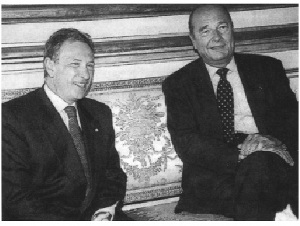

Türkiye, ‘Refahyol’ hükümetinin tartışmalı bir şekilde azınlığa düşürüldüğü günlerden geçmekteydi. ‘28 Şubat Bildirisi’ sonrasında, Erbakan/Çiller beraberliği son bulmaktaydı. Doğru Yol Partisi’nden ayrılan milletvekillerinin dtp’si, anap ve dsp ile yeni koalisyonu oluşturmaktaydı. Mesut Yılmaz başbakandı, Bülent Ecevit ve İsmet Sezgin, Başbakan Yardımcısı. Avrupa Birliği, o dönemin Türkiye’sinde de başlıca gündem maddesiydi. ab’nin Lüksemburg Zirvesi (Aralık 1997) öncesinde, Türk dış siyasetinin geleneksel ab anlayışı, kamuoyunun genel yaklaşımı ve algılayışı şu özellikleri taşımaktaydı:
a) İkinci Sınıf Biletle ab Yolculuğu
Türkiye’yi yönetenler, genellikle ‘geleneksel’ ab siyaseti izlemişti. Benim eski bir yazımda ‘ab’nin gerilerdeki bir kompartımanına, ikinci sınıf biletle ve uzak akraba kimliğiyle sığışmanın siyaseti’ şeklinde tanımladığım anlayış egemendi. Batı Avrupa kapılarında muhtaç ve mecbur bir Türkiye imajı, Türkiye’yi yönetenlerin yanlış mesajlarıyla ab’nin zihnine yerleştirilmişti. Bu yaklaşımla hem Türkiye’nin kendi değerini düşürdüğünü, hem de hiçbir sonuç alamayacağını biliyordum. Eğer kırk yıldır uğrunda çalışılan bir ab yakınlaşması, ‘ab üye adaylığı’ gerçekleşecekse, bu, kökten bir siyaset değişimiyle olacaktı. Türkiye’nin, kendi stratejik, kültürel değerini, ekonomik katkılarını bilinçli kullanmasıyla, ‘dik durmasıyla’, uluslararası dengeleri doğru okumasıyla... Oysa, Türk dış siyasetini yönetenler, çoklukla, Batı’ya, kimi durumda abd’ye yahut ab’ye ne kadar bağımlı görünürler, bağımlı davranırlarsa, o ölçüde makbule geçeceklerini sanmışlardır. Sürekli bir mahcubiyet, bazen teslimiyet, benim ‘uslu çocuk tavrı’ dediğim sessiz bir siyaset. Türkiye, Avrupa, Avrasya’nın ilk cildinde bu konu üzerinde hayli durduğumdan, tekrar etmeyeceğim.
Türkiye’nin geleneksel dış siyasetinde, ab konusu, ‘... biz neler alacağız’ anlayışının merceğinden görülmüştür. Türkiye, ab’ye hiçbir katkısı olmayan, olamayacak olan bir ülke şeklinde Türkiye’yi yönetenlerce algılanmıştır; bu özelliklerle dışarıya yansıtılmıştır. Sadece ‘almak için’ düşünen, katacak bir şeyi bulunmayan bu çaresiz görüntü, bazılarına göre bu tek taraflı aşk, Türkiye’yi uzakta ve yedekte tutmanın, Türkiye’nin ab ilişkilerini Brüksel’den ve ölçüsüz, dengesiz biçimde ab lehine yönlendirmenin manivelası olarak kullanılmıştır. Örneğin, ‘Gümrük Birliği Anlaşması’nın Türkiye yararına bazı makûl hükümlerden yoksun kalması, Türk tarafının kendine yakıştırdığı çaresizliğin, katacak bir şeyi bulunmadığı anlayışının da bir sonucu olmuştur.
Türkiye’nin geleneksel ab politikası, meseleyi bir dış siyaset bütününün parçası olarak görememiştir. Büyük fotoğrafı değerlendirememiştir. ab konusu, öteki dış siyaset etkenlerinden, ab’yi çevreleyen koşullardan, büyük dengelerden ‘soyutlanarak’ tanımlanmıştır. Oysa, Türkiye’nin önemli gücü ve dış siyaset kozu şudur: ab’nin de içinde yer aldığı, ab’nin de hesaba katmak zorunda olduğu büyük fotoğrafta, bölgesel ve küresel dengelerde, Türkiye’nin ciddi, stratejik, güncel bir etken olabilmesi. Tabii, bu gücünün abartmaksızın bilincinde olması ve bunu gene abartmaksızın kullanabilmesi koşuluyla. Örneğin, dış siyaset, Türkiye’nin Balkanlar’daki konumundan ve etkinliğinden, tarih ve kültür birikiminden genellikle yararlanamamıştır. Bu özelliklerini, ab adaylığının gerçekleşmesine dönük hayata geçirememiştir. Oysa aynı stratejik özellikler, Türkiye’nin ab adaylığının kararlaştırıldığı Helsinki Zirvesi (Aralık 1999) öncesinde özenle ve etkin şekilde kullanılmıştır.
1997 Eylülü’nde, ab için yeni bir girişim yapılmasını isteyen, ancak birikimiyle, kamuoyuyla, zihinsel hazırlığıyla yetersiz bir ortam vardır. Bilincinde olunmayan sadece Türkiye’nin ab açısından önemi, tarihi, kültürü, birikimi değildir. Aynı zamanda, Avrupa Birliği’nin felsefesi, misyonu, derinliği de bilinmemektedir. Hele bu eksiklere bir de geleneksel siyasetin ‘o Türk dostu, diğeri Türk düşmanı’ benzeri saplantıları, kendine ‘hami’ aramak gibi alışkanlıkları eklenince, Lüksemburg’da umut olmayacağı anlaşılıyordu. Tabii ki elden gelen yapılacaktı; elden ne geliyorsa sonuna kadar zorlamak ve yapmak, her zaman izlenmesi gereken bir yönetim ilkesidir.
Türkiye’nin ab yolundaki engelleri, ab’li bakanların, sözcülerin diline pelesenk olmuştu: ‘Yunanistan, Kıbrıs, İnsan Hakları...’ Yunanistan’la, Yunanistan’ın koşulları kabul edilerek anlaşma yapılmalıydı. Kıbrıs’ta, Kıbrıslı Rumların öngördüğü çerçevede, Türkleri çaresiz bir azınlığa dönüştürecek anlaşma olmalıydı; insan hakları/demokrasi eksikleri bir an önce giderilmeliydi. Bunlar olmazsa, Türkiye’nin ab adaylığı da olmayacaktı. Bakanlığımın ilk aylarında sıkça karşılaştığım bu söylemin ilk anlamlı örneğini, 1996’daki bir toplantıda yaşamıştım. Alman Dışişleri Bakanı Kinkel, Türkiye’yi ziyaret etmekteydi. tbmm’nin Dışişleri Komisyonu’nda bir konuşma yapacaktı. Komisyon üyelerinin yanı sıra, Avrupa Konseyi’ndeki Türk delegasyonunun başkanı olarak ben de çağrılıydım. Kinkel’in, tipik Alman dış siyaset üslûbunun bütün köşeliliğiyle ve açıklığıyla anlattıklarına tepki duyduğumu hatırlıyorum. Kinkel, aslında dürüstçe ve net biçimde şunu söylemekteydi: ‘Bu üç sorunu çözün, çözmezseniz, ab adaylığını da, ab sürecinde yer almayı da unutun.’
Bunlar belli ölçüde doğruydu da, yüzeysel yaklaşımlarla tekrarlanmaları, ne sorunların anlaşılması, ne de çözülmesi için yeterliydi. Zaten, 1997-1999 dönemi, ab kaynaklı bu yüzeysel tahlilin yüzeyselliğini ab’ye göstermek ve kabul ettirmekle geçti. Yunanistan’la ‘uzlaşmak’ için, Yunanistan’ın da olumlu iradesine ihtiyaç olduğu; Kıbrıs’ta çözümün, tek taraflı fedakârlıkla değil, karşılıklı adımlarla gerçekleşebileceği, ab’ye ve üye ülkelerine ısrarla anlatıldı. Türkiye’nin insan hakları/demokrasi sorunları ise, onların da paylaştığı ancak öncelikle bize ait olan konulardı. Bu konudaki eleştirilerini özünde kabul ettiğimi, ancak abartılı, bazen kasıtlı yaklaşımlarını reddettiğimi belirttim. Türkiye’deki insan haklarının ateşli savunucusu bazı ab’li muhataplarıma, bu konunun benim ve bizim açımızdan, bir ‘entelektüel ilgi alanı’ olmadığını, bizim kuşağımızın bu mücadelede şehitler verdiğini, kaybedilmiş arkadaşlarımızın, yakınlarımızın acısıyla yaşadığımızı anlattım.
ab bağlamında Türkiye’nin dışarıdan nasıl değerlendirildiği ise, ayrı bir olumsuzluktu. Türkiye’nin ‘imajı’, hemen her zaman olduğu gibi, en aşağılarda gezinmekteydi. Yunanistan’ın öncülük ettiği bir Türkiye karşıtı kampanya, inatla ve başarıyla sürdürülmekteydi. Malum Geceyarısı Ekspresi’nden, Ege sorunlarının ve uluslararası hukukun çarpıtılmış kullanımına, terör kamplarına Yunan ev sahipliğine kadar birçok alanda, ab üyesi bu ülke karşımıza çıkmaktaydı. İnsan haklarında zaten var olan eksikler ve yanlışlar, ab ülkelerinin kamuoyunda adeta yeminli bir Türkiye düşmanlığının malzemesine dönüşmekteydi. Almanya, Fransa gibi Türk nüfusu barındıran ülkelerde bu düşmanlık büyüyordu. Öte yandan, küresel stratejide ve bölgesel dengelerde, kendi birikimini, gücünü, etkinliğini kullanamayan, bunlardan bihaber, kişiliksiz bir görünüm Türkiye’ye yakıştırılmaktaydı. Tabiatıyla, kendini, değerini, gücünü bilemeyen bir ülkeye bunları hatırlatmak, başkalarının üzerine vazife değildi. Bilakis, onun bu unutkanlığı içinde sürüp gitmesinden, başkalarının pekâlâ yararı olabilirdi.
İşte, Türkiye’nin ‘aday ilan edilmek umudunu taşıdığı’ ab Lüksemburg Zirvesi, böyle bir ortamda biçimlenmekteydi.
b) Saplantı Değil, Amaç
Yeni dış siyaset yönetimi olarak yapmaya çalışılan ilk iş, Türkiye’nin ab konusuna yaklaşımını değiştirmek oldu. ‘Çalışılan’ demekteyim, çünkü yerleşik anlayışları bir hamlede ve kökten değiştirmek mümkün değildi. Yılların birikimi olan eksikler, kendini küçük görme alışkanlıkları, ab’ye mecbur ve mahkûm olduğumuz saplantıları son derece güçlüydü. Oysa, Türkiye ab üyeliğine aday olabilecekse, üyelik sürecinde ilerleyecekse, bu, çok farklı bir siyasetin izlenmesini gerektirecekti. Konuya ilişkin ilk derli toplu açıklamaları, bakanlığa atanmamın ikinci haftasında ntv’ye, ardından Cumhuriyet’e yaptım. Sadece ab konusunu değil, genel dış siyaseti ve onun bir bölümü olarak ab’yi irdeleyen konuşmalardı. İzleyeceğimiz politikaların ilk açıklaması denebilir. ntv’de özetle şunları söylemiştim (15 Temmuz 1997):
... Avrupa Birliği Komisyonu’nun Lüksemburg Zirvesi’ne (Aralık 1997) dönük olumsuz tavsiyesi, adil olmayan, objektif olmayan, yanlış bir öneri. Gerçi AB Komisyonu’nun Türkiye’yi, AB’nin ‘Genişleme Süreci’nin dışında bırakmayı önermesi beklenmedik bir gelişme değil. Çünkü, böyle bir kararın alınacağı 1995’in mart ayında açıklanmıştı ve o günden bu yana bir süreç devam etti. Biz, hükümet olduğumuz son on beş günde bütün ilgililerle temas kurduk, girişimde bulunduk. Fakat bir süreç başlamış, teknik kimliği olan AB Komisyonu’nda bu öneri kararı alınmıştı ve o değiştirilmedi. Şimdi bu önerinin, ekim sonunda AB Bakanlar Komitesi’nde görüşülmesi var. Aralık ayındaki Lüksemburg Zirvesi’nde ise kesinleşmesi söz konusu. Belirttiğim gibi, bu zihniyet adil değil, objektif değil. Bizim Avrupa Birliği’ne katılma iddiamız, hedefimiz, her zamanki gibi güçlü bir iddia ve güçlü bir hedef. Biz bu hedeften sapmayacağız. Yönettiğim Bakanlık, geçmişte bu doğrultuda yapılanların daha fazlasını ve daha etkinini yapmak için büyük bir uğraş verecek. Ancak şunu da belirtmem lazım, Avrupa Birliği’ni bir hedef olarak tutacağız, hattâ bu hedefi güçlendireceğiz, ama AB bizim için marazi bir saplantıya dönüşmemelidir.
Türkiye elbette hedefi gözden kaybetmeyecek, fakat, Lüksemburg Zirvesi’nde adaylık gerçekleşmezse, hattâ AB adaylığı, üyeliği hiç gerçekleşmezse, biz Türkiye olarak talihimize küsüp, elimizi kolumuzu bağlayıp bekleyecek değiliz. AB Komisyonu’nun olumsuz tavsiye kararı nedeniyle Türkiye’nin ufku bir anda kararmış, Türkiye’nin dünyası bitmiş değil. Türkiye bundan dolayı çaresiz, umutsuz kalmış da değil. Biz bu iddiamızı devam ettireceğiz. Biz özünde çok güçlü bir memleketiz. Türkiye çok az ülkeye nasip olan bir kültür boyutuna, bir tarih birikimine, bir stratejik konuma sahip. Ekonominin büyük dinamizmini de kullanarak, memleketimizi yüceltmenin, Türkiye’nin menfaatini savunmanın, geleceği yaratmanın politikalarını izleyeceğiz.
Yabancı meslektaşlarıma da söylemekteyim, Avrupa Birliği’ne katılmak için çok çaba sarf ettik, daha fazlasını sarf edeceğiz. AB’ye hem daha fazla katkımız olacak hem de AB’nin Türkiye’ye katkılarını arttırmasını isteyeceğiz. Örneğin, Gümrük Birliği konusunda biliyorsunuz Türkiye çeşitli fedakârlıklara katlandı, çok uğraştı, sonuçta bizim AB ülkelerine ihracatımız 1996 yılı itibariyle 11,3 milyar dolar. Yani İngiltere, Almanya, Fransa, Belçika ve diğer AB ülkelerine toplam ihracatımız 11,3 milyar dolar. Buna karşılık, Rusya ile yapılan bavul ticaretinin Devlet İstatistik Enstitüsü’nün rakamlarına göre Türkiye’ye sağladığı döviz 7 milyar dolar. Yani bir bavul ticareti 7 milyar dolar getiriyor, bunca güçlü ekonomiye ihracatımız 11,3 milyar dolarda kalıyor. Şunun için söylüyorum, Türkiye’nin imkânı ve ufku geniştir. Biz elbette ve öncelikle AB üyeliğimizin iddiasını sürdüreceğiz, ama aynı zamanda Türkiye’nin bu geniş ufkunun bilincinde olacağız.
AB’nin ilkeleri ve ölçütleri çerçevesinde bakıldığında, insan hakları ve demokrasi boyutunda hâlâ sorunlarımız bulunmaktadır. Bunları çözmek gerekir. Bu konu üzerinde ben de bir çalışmanın içindeyim. Bakanlığımız geleneksel olarak insan hakları konularına eğilen ve çözüm üreten bir Bakanlık. Şimdi biz, şu sıra yapmakta olduğumuz çalışmalardan hareketle, hükümete sunabileceğimiz bir öneri, bir hareket planı geliştirmekteyiz.
Bir de şunu söyleyeyim. Biz 55. Hükümet ve bakanlık olarak, AB ülkeleriyle ve diğerleriyle ikili ilişkilerimizde olumlu başlangıç yaptık. Mevcut bazı sorunların da çözümüne yöneldik. Bunun bir örneğini Madrid’de, Yunanistan’la bir uzlaşı açıklaması yaparak verdik. Bu bir iyi niyet zeminidir. O iyi niyet zeminini geliştirip geliştiremeyeceğimiz yakın zamanda anlaşılır.
Öte yandan, ABD ile geçmiş dönemden devralınmış belli sıkıntılar vardı. Özellikle Amerikan Kongresi’nden kaynaklanan ve iki yıl önce satın alınmış fırkateynlerin çeşitli gerekçeler gösterilerek Türkiye’ye teslimini engelleyen, bizim askeri gücümüzü bir ölçüde etkileyen bir durum. Bu sorunu da bir çözüm noktasına yaklaştırdık. Kesinleşmeden bir şey söylemiyorum ama çözüm olabilecek gibi gözüküyor.
Başbakan Yardımcısı Ecevit ile Cumhurbaşkanı Denktaş’ın bugün ciddi açıklamaları oldu. Sayın Denktaş, Sayın Ecevit’inkine benzer bir tahlil yapıyor ve diyor ki, ‘Bu AB’nin aldığı karar (Komisyon’un önerisi) Kıbrıs ikili müzakerelerine gölge düşürmüştür. Hattâ bir bakıma anlamsızlaştırmıştır’.
Kıbrıs Rum Kesimi’nin bütün Kıbrıs’ı temsil edermişçesine AB’ye katılma sürecinde muhatap kabul edilmesi, 1960 Anlaşmalarına aykırı bir anlayış. Ayrıca da yanlış. AB olarak bunu yapmaya devam edecekler yahut devam edemeyecekler, bu onların sorunu. Türkiye’miz açısından konu belirsiz değil. Çünkü TBMM’nin 21 Ocak 1997’de almış olduğu bir karar var. Burada deniliyor ki, Kıbrıs Rum Kesimi’nin AB’ye katılma süreci belirli aşamalara gelirse, kesinleşme yolunda gelişirse, bu durumda Türkiye ile KKTC arasında kısmi bir bütünleşme süreci anlamında gelişmeler olabilir ve olmalıdır. Dolayısıyla, bizim politikamız Meclis tarafından bir çerçeve olarak belirlenmiştir.
Türkiye ile KKTC arasında gerçekleşebilecek kısmi bütünleşme üzerine çeşitli düşünceler var. Bunları açıklanabilecek olgunlukta görmüyorum. Zamanı geldiğinde, sadece Dışişleri Bakanlığı olarak değil, hükümet olarak, bu konudaki düşüncelerimizi açıklayacağız.
Kıbrıs konusunda biz aşırı tepkili değiliz, çünkü durum meydanda. İmzalanmış bir anlaşma var. Diyor ki, Türkiye’nin ve Yunanistan’ın üyesi olmadığı uluslararası organizasyonlara, taraf olmadığı anlaşmalara, Kıbrıs Cumhuriyeti katılamaz. 1960 (Kıbrıs) Anlaşması’nda bu mevcut. Ne var ki AB ülkeleri bunu hiçe sayıyor. Türkiye dışındaki garantörler de hiçe sayıyor. Biz bu konuda haklıyız ama haklı olmak dış siyasette yetmiyor. Demek ki ya dünya anlamıyor yahut anlamak istemiyor. Bu anlaşma ortadayken, TBMM’nin atıfta bulunduğu karar ortadayken, bizim politikalarımız bellidir. Tepkici değiliz. Tepkicilik daha çok haksız tarafın başvurduğu bir yaklaşımdır. Ancak, anlaşmaların bize tanıdığı hakkı değerlendireceğiz. Bu anlaşma çerçevesinde TBMM’nin aldığı kararı değerlendireceğiz ve politikalarımızı öncelikle Türkiye’nin menfaatine, KKTC’nin menfaatine uygun olarak hayata geçireceğiz.
Türk dış politikası bir yenileşme arayışındayken, AB Komisyonu’nun aldığı son karar (Türkiye’nin adaylığının Lüksemburg Zirvesi’ne önerilmeyecek olması) elbette yanlıştır. Sadece Türkiye açısından değil, Avrupa açısından da talihsizliktir. Meseleye, ‘Türkiye olarak çok kötü durumda kaldık, menfaatimiz zedelendi’ diye bakmak mümkündür, fakat bu olayın ancak yarısını görebilmek olur. Son AB tavsiye kararından en az Türkiye kadar kaybeden, Batı Avrupa’nın bizatihi kendisi olmuştur. Türkiye’yi kendinden uzak tutmakla Avrupa Birliği’nin neler yitirdiğini biz Batı Avrupa’ya anlatmakta, duyurmakta, hatırlatmakta, geçmişte başarılı olmamışız. 65 milyonluk fevkalade dinamik bir toplumun, yüzyıllardan, hattâ binyıllardan süzülüp gelmiş bir kültürün Batı Avrupa’ya getireceği ek boyutu ve ufku biz belki anlatamadık ama herhalde AB de anlayamadı. AB Komisyonu’nun olumsuz önerisi, Türkiye’ye kaybettirdiğinden sanırım daha fazlasını süreç içinde AB’ye kaybettiren bir öneridir; AB’yi geliştirecek, zenginleştirecek, güçlendirecek bir Türkiye boyutundan AB’yi yoksun bırakmanın ifadesidir...
NTV’ye demeç, 15 Temmuz 1997
İzlenecek yeni ab siyasetinin anahatları böylece oluşmaktaydı. Türkiye’nin ab hedefi, tek başına, kendi başına tek hedef olarak değil, büyük bir dış siyaset bütününün çok önemli unsuru olarak öngörülecekti. Bu anlayış, ilerde, yeni bir söylemde somutlaşacaktı: Türkiye’nin, birbiriyle çelişen değil, birbirini bütünleyen iki büyük amacının var olduğu, ‘ab üyesi olmak ve Avrasya’nın belirleyici bir ülkesi olmak’ hedeflerinin birlikte izlendiği... Yapmaya çalışılan, ab’yi ikinci plana atmak değildi elbette. ab ile yakınlaşmayı ve ab adaylığını gerçekleştirecek, üyelik yollarını açacak, aynı zamanda Türkiye’nin küresel-bölgesel dengelerdeki konumunu güçlendirecek stratejiyi, siyaseti oluşturmaktı. Ancak böyle bir duruşla, böyle bir siyasetle ab yolunda mesafe alınacağını görebilmekteydik.
Bu doğrultudaki açıklamaların, arayışların ikincisini, Bakanlığa gelişimden bir ay kadar sonra Cumhuriyet gazetesinde yayınlanan Lale Sarıibrahimoğlu’na verdiğim uzun bir demeçte gerçekleştirdim. Bir bakıma, izleyeceğimiz dış siyasetin, bu dış siyaset bütünü içinde ele alınacak ab sorununun parametrelerini tartıştım (17 Ağustos 1997):
– Yeni Sol adlı kitabınızda (1994), ‘Türkiye’nin Avrupa Topluluğu’na katılması, bir saplantı olmaktan çıkarılmalıdır. Türkiye’yi aralarına istemeyenlerin arasına ille de gireceğiz diye ısrar etmek anlamsızdır’ diyorsunuz. Kendinizin de vurguladığı gibi, bugün gelinen noktada, ‘AB’ye ille de gireceğiz’ diye ısrar etmenin artık küçültücü olmaya başladığı düşüncesinde misiniz? Türkiye’yi küçük düşürmeden AB’ye tam üyelik perspektifini nasıl sağlayacaksınız?
• Söz konusu kitaptan ‘tırnak içinde’ aktardığınız düşünceler dün de bana aitti, bugün de bana aittir. Dışişleri Bakanı olarak da izlediğim siyaset, AB’nin bizim için her zaman öncelikli bir hedef olduğudur; ancak bir ‘saplantı’ olmayacağıdır. AB’nin son komisyon raporunda Türkiye için önerdiği konum, bizim açımızdan yeterli değildir. AB’nin Aralık 1997’de kesinleşecek genişleme planında Türkiye’nin hakkı olan yer yine tanınmazsa, bu durum, ısrarla belirttiğim gibi, Türkiye açısından ufkunun kararması, dünyasının bitmesi değildir. Türkiye büyük bir devlettir, derin bir tarihtir, köklü bir kültürdür. Son zamanlarda, fevkalade dinamik bir ekonomidir. Bir yandan AB’deki konumumuz ve iddiamız devam eder, bir yandan da, geçmişte yeterince yapılamayan bir şeyi şimdi daha özenle gerçekleştiririz: Ekonomik ilgi ve ilişki alanımızı, büyük ölçekli ekonomilere, ABD’ye, Japonya’ya, dünyanın başka bölgelerine yayarız. Ancak AB Lüksemburg Zirvesi’ndeki bir olumsuzluk sonucunda, Türkiye’nin AB ile ilişkilerinde geçmişin heyecanı, şevki kalmaz. Bundan AB de Türkiye de kazançlı çıkmaz, ama olay o noktaya gider. Türkiye’nin ekonomisinde, büyük yatırımlarında, sivil sanayiinde ve savunma sanayiinde, AB ülkelerinin şirketleriyle geçmişte sergilenmiş öncelikli ilişkilerin geliştirilmesi zorlaşabilir.
‘AB konusunda Türkiye’yi küçülten bir ısrar, bizim hükümetimizin ve Bakanlığımızın yaklaşımı değildir. Nitekim, ‘Gümrük Birliği Artı’ yahut ‘Avrupa Konferans’ tabir edilen yarı-çözümleri çözüm olarak benimsemeyeceğimizi açıkladım.
Kimse bizim Bakanlığımızdan Türkiye’yi küçük düşürmemizi beklemesin; böyle bir kaygıya kapılmasın. Tam üyeliğin ‘somut’ perspektifi sağlanacaksa, bu, Türkiye’nin kişiliğinin, gücünün bilincinde olunmasıyla ve Bakanlığımızın doğru siyaset uygulamasıyla gerçekleşecektir. Bir de tabii, demokrasi anlayışlarımızı ve insan hakları duyarlılığımızı önümüzdeki aylarda daha ileri noktalara ulaştırmamızla...
– AB’nin genişleme konusunda nihai kararı vereceği aralık ayına kadar olan dört aylık sürede bu hakkı elde etmek için aşağı yukarı son iki yılda kaybedilen zemini hangi yöntemleri uygulayarak yakalayabilirsiniz?
• Tam üyelik. Ankara Anlaşması’yla 1963’te Türkiye’ye tanınmış olan bir haktır. ‘Kaybedilen zemini yakalamaya’ gelince: Benim Bakan olarak önümüzde bulduğum durum, AB’nin genişleme sürecinde Türkiye’nin en gerilere terk edilmiş olmasıdır. Demin belirttiğim ilkesel çerçevede, yani, AB üyeliğini abartmaksızın, tabii ki bunun gerçekleşmesi için çalışacağız. Topluma yanlış umutlar dağıtmaktan da uzak duracağız. Bakanlığımız, Lüksemburg Zirvesi’ne dönük kapsamlı bir planlama çalışması içinde. Tüm konular ve ülkeler tek tek ele alınıyor. Her düzeyde temaslar öngörülüyor. Emeklerimiz sonuç vermezse, bu bizden çok, başkalarının yanlışı olur. AB’yi Türkiye’nin üyeliğinden yoksun bırakmak, bizim olduğu kadar, AB’nin meselesidir.
– Türkiye’nin 1997 Aralık ayına kadar kendisine bir tam üyelik perspektifi verilmemesi halinde halen Gümrük Birliği’ni sürdürmesi teknik ve siyasi olarak mümkün görülebilir mi? Türkiye, AB’den somut olarak nasıl bir tam üyelik perspektifi açmasını istiyor?
• Gümrük Birliği Anlaşması’nı, bazı noktalarda düzeltilmeye muhtaç görmekteyiz. İlki, AB’nin Türkiye’ye karşı uygulayamadığı çeşitli taahhütleri var. AB, bize bir bütün olarak, AB olarak söz veriyor. Söz verirken kimse çıkıp vetosunu ortaya koymuyor. Sonra AB, ‘üyelerimden biri veto etti’ diyerek kendi taahhüdünü çiğniyor. Bu, AB’nin ayıbıdır. Öte yandan, iyileştirilmesi bizce gereken hükümler var. Birkaçında düzeltme sağlanmış, bazılarında isteğimiz kabul edilmemiş. Ancak kimi şikâyet konumuzun çözümü, üye ülkeler parlamentolarının ve AB Parlamentosu’nun onayını gerektirdiğinden, zor görünüyor. Türkiye, Gümrük Birliği Anlaşması’nı AB üyeliğinin ilk adımı olarak algılamıştı, böyle benimsemişti. Somut ve görülebilen bir üyelik hedefinden yoksun bırakılması bu anlaşmanın temelindeki mantıkla bağdaşmıyor. ‘Güçlendirilmiş Katılım-Öncesi Stratejisinin’ çerçevesindeki tam üyelik hedefi ve başı ile sonu tanımlanmış bir tam üyelik müzakere süreci, AB ile aramızda olumlu gelişmeleri yeniden başlatabilir.
– 55. Hükümet olarak Türkiye’nin ağırlığını yeniden hissettirecek Kıbrıs politikamız nedir? Tepkisel Kıbrıs politikalarından çok, inisiyatifi ele alan bir politika izlenecek mi?
• Hükümetimizin yaklaşımı, tepkisel politikalara başvurmak değildir. TBMM’nin 21 Ocak 1997 tarihli kararında, TC ve KKTC Cumhurbaşkanlarının ortak çalışmalarında, nihayet 20 Temmuz 1997 tarihli Denktaş-Ecevit ortak açıklamasında, Türkiye’nin yaklaşımı ortaya konmuştur. Bu çerçevede, kısmi entegrasyona, işbirliğine ve ortaklıklara dayalı projeler hazırlanmakta ve bazıları uygulamaya girmektedir. Bu bir tepki değildir. Türkiye ve KKTC’nin, kendi hakkını gerçekleştirme sürecidir. Güney Kıbrıs Rum Yönetimi, Türk tarafının hakkını ihlal ettikçe, Türkiye ve KKTC arasındaki bu süreç, doğal olarak devam edecektir. (Bakan Cem ile bu röportajdan kısa süre sonra, Cem ve KKTC Dışişleri Savunma Bakanı Taner Etkin arasında ekonomik ve mali bütünleşme, güvenlik, savunma ve dış politikada ortaklık esasında kısmi bir bütünleşmenin sağlanmasına yönelik bir Ortaklık Konseyi kurulması Lefkoşe’de kararlaştırıldı - L.S.)
– Sizce Kıbrıs için nasıl bir çözüm gerçekçi model olacak?
• Egemenliğin paylaşılmadığı bir model düşünülemez. ‘Gerçekçi çözüm’, KKTC’nin, Güney Kıbrıs Rum Yönetimi’nin, iki anavatan olarak Türkiye’nin ve Yunanistan’ın birlikte benimseyebileceği çözümdür. Bu onayı alamamış hiçbir çözüm gerçekçi olamaz.
– Köklü Türkiye aleyhtarı politikaları ile bilinen Yunanistan ile yumuşamanın önkoşulları nelerdir?
• Bizim temel yaklaşımımız, tüm komşularımız için geçerlidir: İyi niyetle bize yaklaşana, biz en az benzer düzeydeki bir iyi niyetle cevap veririz. Yunan-istan’la yumuşamanın önkoşulu, lafı bırakıp iş yapmaktır. Madrid Uzlaşması (Temmuz 1997) bir anlayış zemini sağlamıştır. Bu zemin üzerine ‘iş’ bina etmek, bizim amacımızdır. ‘Yüksek Şahsiyetler Grubu’nun oluşup Türk-Yunan sorunlarına eğilmesi için önerilerimizi yaptık. Şimdi, Yunan tarafının kesin cevabını beklemekteyiz.
Yunanistan’la ilişkiler şöyle ya da böyle gelişebilir, ancak Madrid’deki zirve, Türkiye’nin dünyadaki görünümüne olumlu katkılar getirmiştir. Hakkımızda çok güçlü bir karalama kampanyasının hüküm sürdüğü uluslararası kamuoyunda, ülkemizin barışçı yaklaşımı üzerine günlerce yazılmış, görüntüler yayınlanmıştır. Yani Madrid, bize şimdiden ve çok şey kazandırmıştır. Ne var ki, Yunanistan’la aramızdaki köklü sorunlar olduğu yerde durmaktadır; NATO çerçevesindeki tartışmalarda olumlu değil, olumsuz gelişmeler Madrid’i izlemiştir.
– Türk-İsrail yakınlaşmasını teyit ederken bu ittifakın kimseye karşı olmadığını Arap ülkelerine anlatmak konusunda daha etkili bir politika arayışınız var mı?
• Türkiye’nin, İsrail’le ilişkileri yanlış yorumlanmamalı. Bu bir cepheleşme değildir. Arap ülkelerine gerçekleri yeterince anlatmamış olduğumuzu, bakanlık olarak gerekli çabayı belki de göstermediğimizi fark ediyorum. Yanlış izlenimi silmek ve daha iyi anlatabilmek için özel çalışmalarımız olacak. İlgili ülkelere gidip yüz yüze bunları konuşmak istiyorum. Sayın Cumhurbaşkanı (Demirel) bir hayli uğraşmış. Kendisinin önemli katkıları olmuş. Ancak Dışişleri’nin de daha gayretli çalışması lazım. Arap toplumlarına özel bir ilgi gösterilmesi gerektiğini düşünmekteyiz. Zira anlatmamışız, yanlış anlamalar da olmuş, bunları gidermemiz lazım.
– Teröre verdiği desteği ısrarla sürdüren Suriye ile ilişkilerinin düzelmesi için Türkiye’nin koşulu nedir?
• Suriye bizim açımızdan çok önemli. Suriye’nin bölücü şiddet eylemine yahut eylemcilerine desteği var. Bu desteğin bir biçimde ortadan kalkması gerekiyor. Bu doğrultuda Suriye’den olumlu bir açılım gelirse, bizden de olumlu karşılık alacaktır.
– Kavgalı olduğumuz komşuların, Türkiye karşıtı politikalarından vazgeçmeleri nasıl sağlanacak? Komşularla işbirliği nasıl geliştirilecek?
• Her ülkenin dış siyaseti, üç temel ölçü –üç parametre– çevresinde oluşur: Ulusal güvenlik ve toprak bütünlüğü duyarlılığı; ülke kaynaklarının en üst düzeyde değerlendirilmesi; kendi bölgesindeki konumundan en etkin biçimde yararlanması. Bu anlayış, cumhuriyetin kuruluşunda –hattâ daha önceleri– mevcuttu. Esas olan, Türkiye’nin, kendi bölgesindeki tarihsel, kültürel, ekonomik ve jeostratejik önceliklerinden yararlanmasıdır. Türkiye, tarihi birlikte yaşadığı toplumlarla ilişkilerine elbette özel bir önem verecektir. Balkanlar’da, Kafkaslar’da, Ortadoğu’da ekonomik, kültürel açılımlar arayacaktır. Bu yaklaşımlar –bazen ters anlaşıldığı biçimiyle– ‘ikame politikası’ anlamına değildir; yani ‘-Biz Avrupa Birliği hedefini bir köşeye bıraktık, yerine başka tercihler koyacağız’ demek değildir. Avrupa Birliği iddiamızı, tarihimizden kaynaklanan başka özelliklerimizle takviye etmek, bütünlemek söz konusudur. Bizim dış politikamız, kendi coğrafyamızdan hareketle, bölgesel-küresel dengelerde etkili bir ‘dünya devleti’ olmak iddiasındadır.
Tarihsel ve jeostratejik çevremizde yer alan bazı ülkelerle aramız iyi değilse, yapılması gereken, tarihsel ve jeostratejik çevreye küsmek değildir. Tarih ve stratejik ortam, aynı zamanda, fırsatlar, imkânlar da sunmaktadır. Yapılması gereken, Tarihin ve jeostratejinin sunduğu bu imkânlardan yararlanarak, çevremizdeki ülkelerle iyi ilişkilerin yollarını döşemektir.
– Türkiye, ekonomik çıkarları da göz önüne alarak İran ile gerginleşen ilişkilerin rayına oturtulması yolunda bir açılım içine girdi mi? Girmediyse bunun koşulu ne olacak?
• İran’da yeni bir cumhurbaşkanı (Hatemi) var. Beklentimiz, bu ülkenin Türkiye’ye dönük politikalarında bize göre yanlış olanı, geçmişe terk etmesidir. Az önce belirttiğim gibi iyi niyetli her adımı, biz en az o çaptaki bir iyi niyet adımı ile karşılarız. Tarihimizin çoğu kesitinde örneklendiği gibi, İran’la ilişkilerimizin barış ve dostluk içinde bir rekabet olması herkesin yararınadır. Aksi halde, her iki komşu açısından kaynak ve enerji israfına neden olur.
– Türkiye Ortadoğu ile nasıl ‘bir işbirliği yöntemi, izleyecek? Sözünü ettiğimiz Türkiye modelini Ortadoğu’ya nasıl taşıyacaksınız? İzlenecek yöntemler neler olabilir?
• Fransa’nın mevcut Dışişleri Bakanı Hubert Vedrine, göreve başlarken kendi diplomasisinin işlevini ‘... küreselleşme olgusuna uygar özellikler kazandırmak’ diye tanımlamıştı. Burada ‘uygarlıktan’ kastedilen, demokrasi, insan hakları, eşitlik ve özgürlük değerlerini, küreselleşme sürecine katmak. ‘Türkiye modeli’, evrensel değerleri kendi özgün dinamiğiyle taşımaktadır. 1,5 milyar dolayında nüfusu kapsayan İslâm geleneğine sahip ülkeler arasında, Türkiye, demokrasi gibi insan hakları, hukuk devleti, laiklik, kadın-erkek eşitliği gibi çağı paylaşmak gibi değerlere en köklü biçimde sahip başlıca ülkedir. Bu özellikleriyle, ‘örnektir’, daha da fazlası, ‘modeldir’. Değerleri evrensel ve geçerli olduğundan, model, kendi kendisini taşır; zorlamayla, aşırı gayretle dayatma çağrışımları yaratmaya ihtiyacı yoktur. Önemli olan, Türkiye’nin bu özelliğinin bilincine varmasıdır; barışçı, dost yöntemlerle, kendi tanıtımını yapmasıdır; ilgilenen toplumlara kendi deneyimini sunmasıdır.
– Siz bir yazınızda. Güneydoğu sorununun sadece bir ekonomik sorun olmadığına işaret ediyorsunuz. Güneydoğu için yaptığınız öneriler ışığında bu bölgede terörün sona ermesinin önkoşulu nedir? Sol’un yaklaşımı ne olmalıdır?
• Güneydoğu, çok yönlü ve çok boyutlu bir sorundur. Örneğin, ekonomik, tarihsel, kültürel, sınıfsal boyutları vardır; dış siyasal dengeler, dış siyasal etkenler söz konusudur. Dolayısıyla, sorunun çözümü, çok yönlü, çok boyutlu yaklaşımları gerektirir. Bölücü şiddetle mücadele, öncelikle, bütüncül bir yaklaşımı, kapsamlı bir plan çerçevesinde hareket etmeyi gerektirir. Sol, genel olarak, bölücü şiddetin temel nedenini, Güneydoğu Anadolu’nun sınıfsal yapısında, yani feodalizmde ve ekonomik dengesizliklerde görmektedir. Bence de, öncelikle sosyal/ekonomik bir sorundur.
– Rusya ile ilişkilere bakış açınızı anlatır mısınız?
• Rusya ile tarih boyunca rekabetimiz olmuştur. Bu rekabetin barışçı ve üretken gelişmesi her iki ülkenin de yararınadır. Ben bu doğrultuda girişimde bulunmaya hazırım ve karşılıklı sorunlarımız, kaygılarımız varsa bunları konuşup çözmek isteriz. Bu yönde çalışmalarımız var. Bir ‘eylem planının’ esaslarını hazırlamaktayız.
Rusya ile Osmanlılar yüzlerce yıl birbirine düşman değil dost olsalardı her iki ülkenin geleceği başka türlü belirlenmiş olurdu. Yalnızca Rusya’nın ve bizim değil, Avrupa’nın tarihi de belki farklı yazılmış olurdu. Rusya ile iyi ilişkileri çok önemsiyorum. Burada ayrıntısına girmek istemem ama bizim açımızdan bazı kaygılar ve sıkıntılar da söz konusudur.
– PKK konusu mu?
• Var olan kaygıların, karşılıklı kuşkuların giderilmesini önemsiyorum. Her iki ülkeye büyük yarar sağlayacak birikim var, harekete geçirmek için girişimleri sürdüreceğim.
– Kafkaslar’a dönük politikamız ne olacak?
• Bizim Kafkasya’da Gürcistan ve Azerbaycan’la gayet iyi ilişkilerimiz var. Bu özellikleri, Kafkaslar’ın bütününe taşımak ve bölgesel işbirliği modeli oluşturmak istiyoruz. Böyle bir ortam oluşursa, hem Türkiye hem de bölge bundan büyük yarar sağlar. Ermenistan ve Azerbaycan arasında bir uzlaşmaya varılması ise herkesin yararınadır.
– Hazar Havzası petrollerini Türkiye üzerinden Batı’ya pazarlaması projesinde Ankara’nın şansını kaybetmekte olduğu belirtiliyor. Türkiye yeni dönemde Ceyhan Hattı’nın gerçekleşmesi için ne tür somut politikalar geliştiriyor? Ermenistan-Azerbaycan barışının Ceyhan yolunun açılmasında etken olduğuna inanıyor musunuz?
• Türkiye’nin, bizden önceki hükümet döneminde petrol boru hatlarına yeterli önemi verdiği izlenimini almadım. Biz bu konuda çalışmaktayız, ama henüz işin başlangıcındayız. Boru hatları konusunda şansımızı kaybetmediğimiz düşüncesindeyim. Bakalım, önümüzdeki aylar neler gösterecek...
Lale Sarıibrahimoğlu’na demeç,
Cumhuriyet, 17 Ağustos 1997
c) Avrupa’yla İlk Temaslar: İtalya
‘Avrupa’, Türkiye’nin tarihinde, aynı zamanda kimliğinde, psikolojisinde, tanım yerindeyse, bilinçaltında her zaman var olmuştur. Yüzlerce yıl bir hasım olarak, ama aynı zamanda bir referans, bazı dönemlerde de örnek olarak... Türkiye’yi yöneten kadrolarda genellikle bir ‘Batı kompleksi’, Avrupa ve Avrupalı karşısında kendini küçük görme özelliği dikkati çekmiştir. Benim Avrupa sorunsalına yaklaşımım, hiçbir zaman bir hayranlık, hele öykünme ve kompleks olmamıştır. Yüksek öğrenimimi Batı Avrupa’da gerçekleştirmem, Avrupa olgusunu yakından tanımam, bu kültürün güzelliklerinin ve erdemlerinin, yaratıcılığının bilincinde olmamı mümkün kılmıştı. Aynı şekilde, Avrupa’nın eksik yanlarını, tarih düzeyindeki haksızlıklarını, kendinden geri olan kıtalarda insanlara verdiği acıları da, derinlemesine biliyordum. ab gibi hayati bir konuda, Batı Avrupa ülkeleri ve liderleriyle tartışmak, durumuna göre mücadele etmek, ikna etmek, uzlaşmak, olabilecek en iyi sonucu almak için kendimi birikimli görmekteydim.
1997 Temmuz-Aralık döneminin başlıca konusu, Avrupa ve Avrupa Birliği’ydi. Dolayısıyla, ilk temaslar öncelikle bu çerçevede gelişti. Özellikle iki önemli ülkenin, İtalya ve Fransa’nın konumundan başlamak istiyorum:
Benim ilk ikili görüşmem, 1997’nin temmuzunda, henüz birkaç haftalık bakanken, İtalya Dışişleri Bakanı Dini ile Roma’da oldu. Dini, dostluğumuzun bakanlık dönemleri sonrasında da sürdüğü çalışma arkadaşlarımdandır
İtalya’nın, Türkiye’nin Avrupa siyasetinde çok önemli yeri vardır. Hem tarih, hem günümüz açısından. İtalya, her şeyden önce, bir kültür devidir, Avrupa’yı Avrupa yapan, onun kültür kimliğini, rönesansını, yani ‘yeniden doğuşunu’ mümkün kılan birikimdir. İtalya, benim yurtdışındaki öğrencilik yıllarımdan bildiğim, birçok şehrini gezdiğim, müzelerini, ünlü meydanlarını tanıdığım bir ülkedir. İtalyan halkının ‘genlerinde’ sanat ve estetik vardır. Beni her zaman etkileyen, büyük sanatçılarının ünlü eserleri kadar bende hayranlık uyandıran, İtalyanların günlük yaşamında, iş ortamında, dükkânında, evinde, mahallesinde, çevresinde adeta kendiliğinden oluşmuş yüksek estetik düzeydir. Küçük ve sıradan bir İtalyan kasabasında bile, pastel renklerin güzelliği ve olağanüstü uyumu, yapıların birbiriyle ve çevreyle bütünlüğü ve dengesi olağanüstüdür. O kasaba halkının ortak ve isimsiz birikimi, sıradan güzelliği, üzerinde uğraşılmamış doğallığı olan küçücük meydanlar ve onları çevreleyen yapılar, sanki çok bilinen büyük sanatçıların, ünlü mimarların elinden çıkmış gibidir. İtalyan sinemasının klasikleşmiş yapımcıları ve yöneticileri (Visconti’ler, Bertolucci’ler, Fellini’ler, Travianni’ler, Tornatore’ler vb.) ise, bence dünyanın en iyileri arasında yer alır. Bir de, İtalyanlarla Türklerin, ‘Akdenizli’ olmaktan gelen ortak özellikleri, benzeşen güzellikleri ve benzeşen eksikleri söz konusudur. Bir bakıma, bir Türk yurttaşının Batı’da en az yabancılık çekeceği ülkelerin başında, İtalya, Yunanistan’la birlikte yer alır.
İtalya ve Türkiye, tarihte birbirine hasım olmuş iki ülkedir. İtalya, Katolik inancının mekânı, bir bakıma, temsilcisidir; Türkiye ise, yüzyıllar boyunca İslâm’ın koruyucusu olmuştur. İtalyanlar, Hıristiyan medeniyetine karşı İslâm yayılmacılığının, tehdidinin öncüsü, simgesi olarak Osmanlıları nitelemiştir. Nitekim, Avrupa’nın, Osmanlılara karşı başlattığı bütün ortak girişimlerin öncülüğünü Papa üstlenmiştir. Bu geçmişin izleri, günümüz İtalya’sında da vardır. ‘Anneciğim, Türkler geliyor’ kaygısının bir başka ülkede ve dilde değil de İtalya’da var olması rastlantı sayılamaz. Tarih ve kültür boyutunda bütün bunlar gerçektir; İtalya’nın, Libya’ya saldırısı, Osmanlılarla savaşı, Anadolu’nun işgalinde yer tutması yaşanmıştır. Ama günümüz dengelerinde İtalya’nın Türkiye’ye, Türkiye’nin İtalya’ya yaklaşımı farklıdır:
İtalya, kendi ‘Akdenizliliğini’ öne çıkararak, özellikle Doğu Akdeniz’deki konumunu kullanarak, Almanya-Fransa-İngiltere karşısında bir denge oluşturmanın siyasetini izlemektedir. Bu, İtalyanların ab içindeki değişmez stratejisidir. Bu bağlamda, İtalyanlar açısından Türkiye’nin ayrıcalıklı bir konumu vardır. Türkiye ile özel ilişkiler, ekonomik yakınlıklar, Doğu Akdeniz bağlamındaki beraberlikler, İtalyanların Avrupa stratejisinde önemlidir. Nitekim, ekonomide, özellikle İtalyan sermayesinin önemli yer tuttuğu Türkiye’nin öncü otomotiv sektöründe olsun, ister Türkiye’nin ab üyeliğine verilen destekte, Kıbrıs konusundaki nispeten anlayışlı yaklaşımda olsun, İtalyanlar, Türkiye’ye tanıdıkları bu özel konumu her dönemeçte sergilemişlerdir.
Benim İtalya ziyaretim, bu nedenlerle önem taşımaktaydı. Dışişleri Bakanı Dini, gerçekten ‘filozof gibi’ bir insandır; ama aynı zamanda son derece sevimli, adeta çocuksu bir kişiliği vardır. Sanki her tür siyasal göreve erişmiş, bütün İtalya’nın, sağı ve soluyla partilerin, kamuoyunun saygısını kazanıp sürdürmüş olan o değildir; her zaman alçakgönüllü, araştıran ve sorgulayan, yeni projelere genç bir hariciye memurunun heyecanıyla, genç bir siyasetçinin hırsıyla sarılan, kırk yıllık siyasetin Lamberto Dini’sidir. Açıkçası, bazı insanlar için övgü niyetine ‘aristokrat’ tanımının kullanılması bana ters gelir. Ama aristokrasinin bazı güzellikleri varsa, bunların, Dini’nin kişiliğinde toplandığını düşünmüşümdür. Dini, her zaman ‘öğrencidir’, her zaman heyecanlıdır, her zaman bizdendir, ama elinde değil, istese de istemese de, ‘aristokrattır’ aynı zamanda...
1997’nin ağustosunda Dini ile resmi görüşmemizi gerçekleştirirken, muhatabımın kişiliğini yakından tanımıyordum. Deneyimli, bilgili, nazik yapısı hemen dikkat çekiyordu. Türkiye’nin konumunu doğru değerlendirmekteydi. Beklediğim gibi, ikili siyasal ve ekonomik ilişkiler, ab, Kıbrıs, ve en fazla Akdeniz konuşuldu. Birbirimizi zorlamadan, sınamadan, herkesin kendi ülke menfaatinin bilincinde olduğunu fark etmenin güveniyle tartıştık.
Dışişleri bakanlıklarında, sade bizde değil, hemen hepsinde, bir ‘müzakere usulü’ vardır. Şimdi bakanlıktaki arkadaşlarımızın ‘estağfurullah’ demelerini işitir gibi oluyorum ama, dünyanın hiçbir ülkesinin Dışişleri memurları, kendi bakanlarının bir başka bakanla yapacağı ikili görüşmeye içleri rahat olarak katılmazlar. Dolayısıyla, usul, ilgili dairenin ciddi çalışarak bir konuşma metni ya da konuşma senaryosu (talking points) hazırlamasıdır. Önce, bakan şunları söyleyecek, bu noktalara değinecek, şu konularda sual açacaktır; sonra, muhatap bakan eğer şu, şu noktaları gündeme taşımaktaysa, o zaman, şöyle cevaplar öngörülecektir, vb. Böylece, bakandan kaynaklanabilecek yanlışlar bürokrasi tarafından ve peşinen asgariye indirilmiş, verilmesi planlanan mesajlar ise eksiksiz verilmiş olabilecektir.
Önceki bakanlarımızın yönteminin, daha çok, bürokratların önlerine koydukları konuşma metinlerini okumak olduğu bana anlatılmıştı. Ben bu yöntemin tümüyle dışına çıktım. İlgili Bakanlık dairesinin hazırlığını tabii ki dikkatle okuyor, bazı bölümlerinden kullanacağım notları çıkarıyordum. Kendi anlayışımın dışında gördüğüm hususları ise, arkadaşlarımla tartışıyor, ona göre değerlendiriyordum. Böylece, kendi siyaset çizgimi, mantığımı, bürokrasi dışındaki birikimimi bu konuşmalara yansıtıyordum, konuşma planımı kendim düzenleyip, metinden okuyarak değil, irticalen uyguluyordum.
Bu anlayışımın daha doğrusu ve etkilisi olduğunu zaman içinde gördüm. Örneğin, Vedrine, Albright, Cook, Amr Musa, Fischer gibi iddialı dışişleri bakanları, birlikte olduğumuz nato, ab toplantılarında, ikili görüşmelerde, ‘metinden okuyarak’ konuşma yapmadılar. Kendi bürokrasilerinin hazırladığı notlardan da yararlanarak, ama kendi düzenledikleri bir plan çerçevesinde, kendi kişisel birikimlerini, kendi kurdukları mantığı öne çıkararak irticalen konuştular. Ben de bunu yapmaktaydım. Ve bu tür konuşmaların daha dikkatle, önemle izlendiğini, saygıyla karşılandığını kısa sürede fark ettim. Metne bakıp okuyanların söyledikleri ise pek dinlenmiyordu. İkili hattâ çoklu temaslarda zabıtlara girecek olan öncelikle sizin söylediklerinizdir. Dolayısıyla yanlış yapmaya gelmez. Ben, bürokrasinin çalışmalarından da yararlanarak kendi düşüncelerimi oluşturduktan sonra, konunun önemine göre, bunları bakanlığın ilgili birimiyle yeniden tartışarak, onların katkısını alarak, konuşmaya son şeklini verirdim. Ayrıca, bazı teknik konuları yazılı metin halinde muhataplara ulaştırmak yöntemini de hayli kullandım. Yazarlık özelliğimden olsa gerek, bu bana daha kolay ve güvenli görünürdü.
Lamberto Dini ile önce ‘ikili’ ilişkiler konuşuldu, hemen ardından ab ve Kıbrıs: İtalya, Türkiye’nin en kısa sürede ab adayı ilan edilmesini, bu yolda ilerlemesini savunmaktaydı. Türkiye’nin içinde yer alacağı ab dengelerinin, İtalya açısından daha elverişli olacağını düşünmekteydi. Bu bağlamda, Kıbrıs konusuna özel bir önem vermekteydi. Kıbrıs Türk tarafının da haklı olduğu noktaları öne çıkararak, bir an önce ortak bir çözüme varılmasını istiyordu.
Görüşme, ortak açıklamada değineceğimiz konuların genel çerçevesi, her şey sıradan ve sorunsuz sonuçlandı da, Dini’nin bir Türk gazetecisinin sualine verdiği cevap, ertesi günün Yunan basınında olay yarattı: Dini, Kıbrıs’ın Türkiye ve ab önünde engel olmaktan çıkarılması için, ‘Kıbrıs Yunan Cumhuriyeti’ ile, ‘Kıbrıs Türk Cumhuriyeti’nin birlikte çözüm oluşturması gerektiğini söyleyiverdi. Ortak basın toplantısını izleyen Türk gazeteciler ve diplomatlar, hayretle Dini’ye bakıyordu, Türkiye olarak bizim söyletmek için diller döküp sonuç alamadığımız şekliyle, öyle ‘cemaat’ falan değil, ‘Kıbrıs Türk Cumhuriyeti’ olarak kktc’nin ismi, ab üyesi İtalya tarafından resmen zikredilmekteydi. Tabii biz sevindik, Yunan basını kızdı, ancak bu isimlendirmenin çok da bilinçli yapılmadığı ya da bir defalık yapıldığı belliydi. Nitekim, Kıbrıs konusunda İtalya öteki ab ülkelerine kıyasla bize hep daha yakın durdu ama, ‘Kıbrıs Yunan Cumhuriyeti’ ile ‘Kıbrıs Türk Cumhuriyeti’nin birlikte ve eşit anılması bir daha duyulmadı.
ab, Dini görüşmesinin başlıca bir konusuydu. Zaten ab ülkeleriyle ikili temasların tümünde, önce o ülke ile aramızdaki ilişkiler, sorunlar tartışılırdı. Ardından, Türkiye’nin ab süreci, adaylık beklentisi, üyelik iddiası konuşulurdu. Ve tabii, Türkiye-Yunanistan ilişkileri, Kıbrıs, insan hakları-demokrasi sorunları ab bağlamında gündeme gelirdi. Daha ilk günlerden başlayarak, bu konularda belirli bir yaklaşım, siyasal bir çizgi benimsedim ve onu hep sürdürdüm. Özelliği, öyle propaganda amaçlı, tartışmada üstün çıkmak iddialı olmayışıydı; ‘bakanlık görüşünden’, resmi politikadan ibaret kalmayışıydı. Bu tartışmalı alanda muhataplarıma söylediklerim, gerçekten, kişisel olarak da inandıklarımdı. Öncelikle vurguladığım üç yaklaşım, ilerde ab ile tartışmalarımızda aynı mantık içinde savunulacaktı. Bunlar, çok özet olarak, şöyle belirlenebilir:
1) Yunanistan’la sorunlar çözümlenebilir, ancak bunun için öncelikle sorunların görüşülmesi gerekir. Eğer Yunanistan oturup konuşmaya hayır demekteyse, bundan kaynaklanmış bir durum, Türkiye’nin ab sürecine bir engel, bir etken olarak getirilemezdi. Böyle düşünen ab ülkeleri ya da ab sorumluları objektif açıdan ve ahlâkî ölçülerle yanlış yapıyordu. Düzeltilmesi Türkiye’nin tek başına elinde olmayan bir durum, Türkiye’nin önüne ‘koşul’ olarak konamazdı; konması, ahlâkî olamazdı. Türkiye bu yaklaşımı reddediyordu.
2) Kıbrıs’ta ‘ortak çözüm’, ancak iki tarafın da ortak çözüm isteği, arayışı, iradesi varsa, mümkün olabilirdi. ab’nin Kıbrıs politikası, Rum tarafının istediği her şeyi ona sağlayarak, böyle bir ortak çözüm ihtiyacını Rumlarda ortadan kaldırmaktaydı. Rum tarafı statükodan memnundu, hele ab üyeliği güvence altına alındığında, kalkıp bir ortak çözüm macerasına kalkışması beklenemezdi. Bu özellikleri taşıyan bir ortamda, ortak çözüm için, Kıbrıslı her iki tarafın da iradesini gerektiren böyle bir durumda, Türkiye’nin ab adaylığına, sürecine, Kıbrıs sorununun engel getirilmesi, hem objektif hukuk hem de ahlâk açısından yanlıştı, kabul edilemezdi. (2004 referandumunda Kıbrıs Rumları ezici bir çoğunlukla ortak çözüme ‘hayır’ derken, ab’li muhataplarıma eskiden anlattıklarımı, ‘Rum yanlısı bu politikanızla, Kıbrıs’ta ortak çözümün önünü bizzat tıkamaktasınız, bu gerçeklerde Türkler değil, Rumlar ortak çözüm istemez’ dediğimi sık sık hatırlamaktaydım.)
3) İnsan hakları ve demokrasi konularında, klasik ‘devlet’ söyleminden hayli farklı bir yaklaşım geliştirmiştik: İlki, Türkiye’de insan hakları ihlallerinin, demokrasi eksiklerinin varlığını kabul etmekteydik. Bu eksiklerin giderilmesi bağlamında, ab ülkeleriyle ikili temaslarda tartışmaya açıktık. (Lüksemburg Zirvesi’ne, 1997 Aralık ayına kadar bu tavır devam etti.) Bu konularda, Türkiye’nin mevcut eksiklerini ab ülkeleri hükümetlerinin, kamuoyunun abarttığı, şişirdiği görüşündeydik. Bu, bazen, siyasi hesaplarla, bilerek yapılıyordu. Yapılması, ab’nin Türkiye’deki demokratik gelişmeye katkı imkânını sınırlamaktaydı. Dolayısıyla, ab, bizimle beraber bu konulara eğilmek istiyorsa, abartılardan, istismardan kaçınmalıydı.
Türkiye’nin ab sürecinde çok önemli olan bu noktalara, tekrar gibi olacak ama, ilerdeki bölümlerde daha ayrıntılı değineceğim. Vardığım sonucu şimdiden söyleyeyim: Tartıştığımız bu konular ya da koşullar, elbette adaylığın, müzakerenin, üyeliğin çok önemli unsurlarıdır, unsurları olmuştur. Ancak bunlar kadar önemli, hattâ belki daha önemli olan, belirleyici olan şudur: ab’nin menfaat dengelerinde, küresel stratejinin gerçeklerinde Türkiye’nin konumu, bu konumun gelişimi ve Türkiye’nin kendi öneminin bilincinde olabilmesi, bunun gereğini yapabilmesi...
Lamberto Dini ile en ‘çetin’ ortak sorunumuz, bir spor olayından kaynaklandı. Nedense, İtalya ile bu spor çıkışlı sorunlar sonra da yaşandı. 1998 sonunun, 1999 başının en karışık, en hareketli günleri: Türkiye’nin kararlı tutumu, ciddi siyaseti sonucunda, terör hareketinin lideri Suriye’den çıkmak zorunda kalmış, İtalya’da kendisine koruyucular ve barınacak bir mekân bulabilmişti. Türkiye-İtalya ilişkileri inanılmaz kötü bir dönemden geçmekteydi. Bizim kamuoyu ayaktaydı, İtalyan ürünlerine boykotlar, kara çelenkli gösteriler birbirini izlemekteydi. İşte tam bu sırada, sanki bir o eksik gibi, Avrupa kupalarında, bizim Galatasaray’a rakip olarak, İtalya’nın Juventus’u çıkıvermişti. Maç İstanbul’da oynanacaktı. İtalyan dışişlerinde olsun, bizde olsun, herkesi bir kaygı almıştı. Ya bir olay çıkarsa, ya Türkiye’de Juventus’lu oyunculara saldırılırsa, ne yapardık? Ben bizim seyircimize de, olay çıkmayacağına da güveniyordum ama ya çıkarsa? Türklerin ‘barbarlığından’ bahsetmeye teşne bir Avrupa kamuoyu, kimi siyaset çevresi, hazır beklemekteydi. Türkiye’nin 1999’da Avrupa’da sergilediği dış siyasal üstünlüğü, terörle mücadeledeki haklılığı ve beceriyi tersine çevirmek isteyenler, böyle bir imkânı tepe tepe kullanırlardı.
Dini ile sayısını hatırlamadığım kadar çok telefon görüşmemiz oldu. Maçı iptal etmek, hem Türkiye hem İtalya açısından, aczin ikrarından farksız olacaktı. Doğru olan, kendi halkımıza, insanımıza güvenmekti. Biraz ben Dini’yi yüreklendirdim, biraz o bana cesaret verdi, sonuçta, iki dışişleri bakanlığı olarak, İtalyan takımının Türkiye’ye gelmesini ve maçın öngörülmüş tarihte oynanmasını hükümetlerimize önerdik. Doğru da yaptık: Galatasaray-Juventus maçı, son derece düzgün bir ortamda, sporun kardeşliği içinde oynandı. Biz de Dini ile birlikte rahat bir nefes aldık.
Belirttiğim gibi, ne hikmetse, spor kaynaklı dış sorun gene İtalyanlarla yaşandı: Bu defa, sanırım 2001’de, gene Galatasaray, İtalya’nın Roma takımıyla, Roma’da oynamaktaydı. Maç bitti, oyuncular sahayı terk ederken ve giyinme odalarına giderken, bazı İtalyan futbolcular ve özellikle polis, bizimkilere saldırdı; sille tokat dövmeye başladı, yerlerde sürükledi vb. Olayların bir bölümü televizyondan canlı yansımaktaydı, Türkiye bir anda ayağa kalktı. Üstelik, İtalyan polisi, Türk kafilesini statta zorunlu tutarak, ‘pasaportları toplayarak’, otellerine gitmelerini engelleyerek, Roma’dan ayrılmalarına izin verilmeyeceğini belirterek, gerilimi tırmandırmaktaydı. Ayrıca, polis, bazı Galatasaraylı oyunculardan davacıydı, mahkemeye çıkarmadan serbest bırakmayacakları tehdidinde bulunuyordu. Kabul edilemez bir muameleye sporcular hedef yapılmaktaydı. Olayı yatıştırıp, İtalyan makamlarını ikna edip, Türk sporcularının önce otellerine dönmelerini sonra Roma’dan ayrılmalarını sağlamak gerekiyordu. Ayrıca, Roma’daki İtalyan sorumlularına, sorumluluklarının hatırlatılması şarttı.
Gece yarısını çok aşan saatlere kadar uğraştığımızı hatırlıyorum. İtalyan dışişleri bakanı ülke dışındaydı, bir Afrika ülkesinin ziyaretindeydi. İtalya’nın Ankara Büyükelçisi son derece dengeli, becerikli bir diplomattı. Onunla sürekli konuşarak, onun Roma ile temasına destek vererek, sorunu sabahın ilk saatlerinde çözebildik. Ertesi gün eksiksiz Türkiye’ye dönecekleri güvencesini alarak, sporcular otellerine geçebildi. Bu arada, ben, hayli tartışma yaratan, ab ülkelerinin basın ve tv’lerinde önemle tekrarlanan, sert bir demeç vermekteydim. Özetle söylediğim, bir kısım polisin Türk sporculara karşı, Mussolini’nin faşistlerini hatırlatan davranışının ve görüntülerinin, 21. yüzyıl İtalya’sına yakışmadığıydı. Benzetme belki biraz sert olmuştu ama, sanırım doğru da olmuştu. Kaldı ki, bu konuşmayı yapmamış olsam, ertesi günün Batı Avrupa basını başlıklarında benim sözlerimi değil, bazı İtalyan spor yetkililerinin haksız suçlamalarını verirdi.
d) ab Bakanlarına Çağrı
1997 sonbaharı, ab Lüksemburg Zirvesi’ne dönük yoğun çalışmalarla yaşandı. Aralık ayında toplanacak ab Konseyi’nden Türkiye’nin adaylığı kararının çıkması için seferber olunmuştu. Sonuç alınamasa bile, ilerde alınacak sonuç için birikim sağlanmalıydı. Ayrıca, ab zirvesine dönük temaslar, başka konulardaki tezlerimizi, anlayışlarımızı anlatmak, bazı ab üye ülkelerinin bize göre yanlış olan tutum ve davranışını gündeme getirmek için yararlı oluyordu. Siyasette, yazılmış hiçbir satır, söylenmiş hiçbir söz, verilmiş hiçbir emek boşlukta kalmaz. Dış siyasette de öyle: O an için önemsiz bile gözükse, sizin çabanız ve çalışmanız boşa gitmez, oluşan birikime ve bir gün mutlaka varılacak hedefe katkı sağlar. Diplomaside hiçbir şeyin tek hamlede sonuçlanmadığını, hedefe ulaşmanın bir süreç olduğunu bilmekteydik.
1997’nin eylül, ekim, kasım ve aralık aylarında, öncelikli konu ab idi. Bakanlık, Batı Avrupa’nın merkezleriyle sıkı temas halindeydi. Uluslararası basında Türkiye’nin görüşlerini duyurmaya çalışılmaktaydı. Geçmişe kıyasla hayli başarılıydı ama yeterli düzeyin uzağındaydı. Bütün bu girişimlerde, kapı kapı dolaşan ricacı konumuna Türkiye düşürülmüyordu. ab’nin eksiği, yanlışı, bazen ‘çifte standardı’ sorumluların, bakanların yüzüne söylenmekteydi. Türkiye’nin ‘adaylığından’, ab sürecinde ilerlemesinden, Türkiye kadar, ab’nin de yarar sağlayacağı belirtiliyordu. Ancak, demin işaret ettiğim gibi, Lüksemburg’da sonuç ihtimali hayli zayıftı, daha çok geleceğe yatırım yapılmaktaydı.
Bu çerçevede, ab üye ülkelerinin dışişleri bakanlarına birer mektup gönderdim. ‘Mektup yollamak’, bakanlığım süresince çokça kullandığım bir yöntem oldu. İkili görüşmelerde gerçi söylenenler not alınıyor, resmi belge oluyordu ama, konuşmaktan çok, yazarak netleşmek bana daha uygun gelmekteydi. Yazılı metinlere alışkanlığım, yatkınlığım nedeniyle, düşüncelerimi daha iyi anlatabiliyordum.
19 Ekim 1997’de, Lüksemburg Zirvesi’nden tam iki ay önce, Türkiye’nin adaylığına ilişkin mektubum, ab bakanlarına ulaştırıldı:
Sevgili Meslektaşım,
Avrupa Birliği Dışişleri Bakanlar Konseyi’nin gayrı resmi toplanırken, Türkiye’nin konumuna ilişkin gözlemlerimi ve önerilerimi, ben de gayrı resmi olarak size sunuyorum.
Dışişleri Bakanlığı’mın üçüncü ayındayım ve AB üye ülkelerini temsil eden siz meslektaşlarımın hemen hepsini tanımış olmanın onurunu ve keyfini duymaktayım. Herkese teşekkür etmek istiyorum: Tabiatıyla, her konuda ve her zaman aynı görüşleri paylaşmadık. Ancak, getirdiğim önerilere ve belirttiğim kaygılara siz meslektaşlarım olumlu yaklaştı. Hepinizle, yapıcı bir kişisel ilişki kurabildiğimi zannediyorum. Ben göreve geldiğim sıralarda Türkiye’nin AB adaylığı AB tarafından artık ‘kapatılmış bir konuyken’, şimdi, kendini yenileyerek yeni bir değerlendirmenin eşiğine gelmiş gözüküyor. Bunu bir fırsat olarak niteliyorum ve Türkiye-AB ilişkilerinin geleceğine dönük düşüncelerimi belirtmek istiyorum:
1) (AB’nin Lüksemburg Zirvesi’nde) Üç ihtimal gözüküyor:
a- Türkiye’nin de aralarına dahil edildiği 12 aday ülkenin üyelik sürecine alınarak kendi başarıları ölçüsünde ilerlemeleri.
b- Türkiye dahil 12 aday ülkeye, şimdi güçlendirilmiş olan ‘Konferans’da yer verilmesi. (1997’de, Fransa’nın aday ülkeler için ilk adım olarak önerdiği, daha sonra terk edilen ‘Konferans modeli’) Bu modele göre, bazı aday ülkeler konferansın toplanmasının hemen ardından üyelik sürecine girer. Türkiye, katılım öncesi AB stratejisinden yararlanır ve objektif ölçütleri karşıladığında üyelik sürecine katılma hakkını elinde tutar.
c- Türkiye, ötekiler gibi bir aday olarak açıkça nitelenmemiştir; ya da anlamsız ve etkisiz bir ‘Konferans’ modelinin içine yerleştirilmiştir; ya da, aslında Türkiye’yi öteki ‘normal’ adaylardan ayırmak ve dışlamak anlamına gelen bir tür ‘farklı statü’ Türkiye’ye önerilmiştir.
(Bu üç ihtimal çerçevesinde, Türkiye, öteki adaylarla eşit bir aday olmalıdır. Ya herkesle beraber sürece alınmalı, ya da, etkin bir ‘Konferans’ modelinde, bütün adaylarla birlikte ve eşit yer bulmalıdır.)
2) Meslektaşlarımın genellikle ‘Üç Koşul Kümesi’ diye atıfta bulunduğu konuların bazı özelliklerine ilişkin benim farklı yorumlarım var:
a- AB üyesi Yunanistan’la ilişkiler üzerine yapılan eleştirileri genellikle temelsiz bulmaktayım. Her şeyden önce, iki ülke arasındaki bir sorunun çözümü için, her iki tarafa da ihtiyaç var; her ikisinin de katkısı gerekirken, taraflardan sadece biri sonuçtan tek başına sorumlu tutulamaz. Kendi görev sürem içinde Yunanistan’la ilişkileri iyileştirmek için adımlar atıldı ama bütün girişimler reddedildi. Hattâ, bir ara, ‘... kendileriyle diyalogun mümkün olmadığı katiller, hırsızlar, ırz düşmanları’ gibi tanımlarla da karşılaştık.[1] Bizim Yunanistan’a dönük barışçı girişimlerimize ABD de tanık olmuştu. Sonuç alamadık ama, daha düzgün ilişkiler için imkânın var olduğuna inanıyorum.
b- Kıbrıs konusuna gelince: Türkiye, çözümü yaratacak tek sorumlu aktör olarak görülemez. Kısa vadede iyimser değilim. Kıbrıs Türkleri, eşit tanınmayı, anlamlı görüşmeler için bir önkoşul getiriyor, Rumlar bunu reddediyor. Bir de, gizemli ‘Hollbroek faktörü’ var. ABD Kıbrıs temsilcisinin, çözüm önerilerini daha sonra açıklayacağı belirtiliyor. Ayrıca, Kıbrıs Rum Kesimi’nin S-300 füzelerini konuşlandırma projesi, durumu daha da germiştir: Türkiye’yi tehdit ettiğinden, Türkiye’nin karşı girişimlerine yol açmıştır. S-300’lerin yapımcısı Rusya’nın personelinin de Kıbrıs’a gelmesiyle, ek bir askeri varlık adada oluşmaktadır. Aşırı bir senaryoda bunun anlamı, çok sayıda tarafın birbiriyle karşıtlığı, çatışmasıdır; Yunanistan, Türkiye, Kıbrıs Rum Kesimi, KKTC, Rusya, hattâ Avrupa Birliği...
c- AB’li meslektaşlarımla ‘... demokrasi, insan hakları, Güneydoğu’ konularını tartışırken, bir hususu daha açıkça ortaya koydum: Türkiye, 12 Aralık 1997 Lüksemburg Zirvesi’nde AB adayı ilan edilmezse, günümüzdeki gibi sadece Gümrük Birliği üyesi olarak kalacaksa, bu konuları (Yunanistan, Kıbrıs, insan hakları vb.) artık AB ile tartışmayacaktır. Avrupa Birliği’nin üye ‘adayları’ arasında bile yer almayan bir ülkenin, AB ile ancak üyesi bulunduğu gümrük anlaşmasına ilişkin ekonomik konuları görüşür. Siyasal sorunları değil.
3) Vardığım sonuçlara gelince:
a- Türkiye’nin ekonomik gücü dikkate alındığında –AB Başkanlığı, tüm öteki adayların ekonomilerinden daha güçlü olduğunu açıklamıştır– bazı siyasal sorunların varlığına rağmen, Türkiye’nin AB’ye üyelik sürecinin (adaylığının kabulü ile) başlayabileceği düşüncesindeyim. Evet, Yunanistan’a, Kıbrıs’a, demokrasiye ilişkin daha fazla gelişmeye ihtiyaç vardır. Ancak unutulmaması gereken, yıllarca devam edecek bir ‘süreci’ konuşuyor olmamızdır; yarın gerçekleşecek bir üyeliği değil. Kaldı ki, böyle bir süreç, öteki sorunlar üzerinde mutlaka olumlu etki yapacaktır. Özellikle Yunanistan’ı düşünüyorum. Üye bir ülke ile, üyelik yolundaki aday bir ülke arasındaki sınır sorunlarının hafifleyeceğini, zamanı geldiğinde iki üye ülke arasında sorun niteliğini kaybedeceğini zannediyorum. Yanıltıcı olmak istemem, Kıbrıs konusunun sırf Türkiye Avrupa Birliği’ne üye adayı oldu diye çözümlenmeyeceği açıktır. Kıbrıs’ın kendi özellikleri, zorlukları ve korkuları var. 12 Aralık (Lüksemburg Zirvesi) kararı, bütün konuları olumsuza ya da olumluya etkileyecek.
b- 12 Aralık Lüksemburg Zirvesi’nin olabilecek en kötü sonucu, ‘belirsizliktir’. AB’nin, Türkiye için nasıl bir rol düşünüyorsa, bunu çok açık biçimde tanımlamasını istiyorum, önerilen, en kötüsü olsa bile. Yani, ‘özel ortak’, ‘tanımlarda bulunmayan bir tanım’, ‘artısı olan akraba’ türü bir şey olsa bile, kesin çizgileriyle ortaya konmalı... Süren belirsizlik, ekonomimize zarar veriyor. Türkiye Ekonomik Kalkınma Vakfı’nın başkanı geçenlerde ilginç bir açıklama yaptı: ‘... Gelişme projesi AB’ye katılmak üzerine bina edilmiş ancak bu yolda önü kesilmiş bir ülkeye hiçbir yabancı uzun vadeli yatırım yapmaz. AB’nin kararsızlığının bedelini Türk ekonomisine ödetmeye AB’nin hakkı yoktur.’
c- Kendi vatandaşlarıma şunu açıkça belirttim: Bizim hükümetimiz için AB bir amaçtır, saplantı değildir. ‘Dışarıda bırakılmanın’ ekonomimize olumsuz yansımaları, ufkumuzun kapanacağı, güçlü gelişmemizin duracağı, ticaretimizde AB’nin önemsizleşeceği anlamına değildir. Eğer (Lüksemburg’da) gelişme sağlanmazsa, bu Türkiye için ve inanıyorum AB için kaçırılmış büyük bir fırsat olacaktır. Türkiye’nin kaygılarını anlatmak ve meslektaşlarımı ikna etmek için çok uğraştım. Bir ölçüde başardığımı sanıyorum. Umarım, Türkiye’nin konumunu yeniden değerlendirirler, stratejik bir yaklaşımı tercih ederler, yeni ekonomik ufukları araştırırlar, Batı Avrupa’ya yeni tarih ve kültür boyutları eklemenin iddiasını taşırlar ve o kehaneti yapılan ‘medeniyetler çatışmasının’, ‘medeniyetler uyumuna’ dönüşmesine katkı getirirler...
Saygılarımla, İsmail Cem, Dışişleri Bakanı.
AB Dışişleri Bakanlarına Mektup, 19 Ekim 1997
e) Anılar, Kültür ve Siyaset
1 Eylül 1997’de, Fransa Dışişleri Bakanı Vedrine’le ikili görüşmelerimiz için Paris’e giderken, bu önemli ülkeyle geçmişteki ilişkilerimizi, ab içinde aradığımız desteği değerlendirmekteydim. İlk gençliğimden, öğrenciliğimden beri gidip geldiğim, iyi tanıdığım bir ülke, bir halk, bir kültür söz konusuydu. Üniversite eğitimini İsviçre’nin Lozan Hukuk Fakültesi’nde, Fransızca yapmıştım (1959-1963). Çok sonraki bir dönemde (1981), Fransa’nın en önemli siyasal bilimler merkezinde, ‘lisans üstü’ diplomamı, siyaset sosyolojisi dalında almıştım. Eğitim, meslek ve siyaset hayatımın hemen her kesitinde, bir özelliğiyle ve bir yerde mutlaka Fransa olmuştu.
Paris’e ilk kez 1959 sonlarında gitmiştim. O dönemin Türk gençliğinde, Paris’in ve Fransa’nın özel bir yeri vardı. Memlekette, Demokrat Parti iktidarının son ayları yaşanmaktaydı, üniversite gençliği ve hocaları, basın ayaktaydı. 27 Mayıs 1960 İhtilâli’nin yolları döşenmekteydi. Üniversite öğrencisi olarak çoğumuz, Türkiye’de bir iktidar değişiminin, özgürlük ve demokrasi yolunda atılacak adımların tılsımına inanmaktaydık. Fransa, her şeyden önce ‘özgürlük’ demekti; özgürlüğün ve demokrasinin simgesiydi. Hele benim gibi, lise sondayken siyasete merak sarmış bir genç için, Fransız İhtilâli, Fransız demokrasisi ve özgürlüğü, büyülü kavramlardı. Bazı Fransız şairlerini, Orhan Veli’nin inanılmaz güzellikteki çevirilerinden tanımaktaydım, Sartre’dan, Camus’den birkaç eser okumuştum, ayrıca Üç Silahşörler, Monte Cristo, özellikle de Jules Verne’in eserleri ortaokul yıllarımın başucu kitapları arasında yer almıştı. Lozan’a varır varmaz, henüz öğrenmeye başladığım Fransızcamı zorlayarak, L’Express dergisine abone olmuştum. O dönem Fransa, Cezayir politikası üzerine adeta ikiye bölünmüştü. L’Express, Cezayir’e bağımsızlığını tanımanın öncülüğünü ve ilericilerin sözcülüğünü yapmaktaydı. Zorlu ve büyük bir mücadele verilmekteydi. Benim gönlüm, tabii ki özgürlük ve demokrasi cephesinden yana olacaktı...
Şimdi, şu yazdıklarım nedeniyle kırk yıl gerilere bakıyorum da, kişiliğin, kimliğin oluşumunda ilk gençlik döneminin öncelikli yerini görüyorum. Beni en çok etkileyen, düşüncelerime yön veren, o yıllarda okuduklarım, hissettiklerim, algıladıklarım olmuş. Sivil toplumun, iletişimin, toplu etkinliklerin çok daha sınırlı kaldığı, hattâ mevcut olmadığı bizim gençlik dönemimizde, sanırım belirleyici olan ev, aile ortamıyla birlikte, okul ve öğretmenlerdi: Ortaokul ve lise yılları, İstanbul Robert Kolej’in, 12-13 yaşındaki çocukları ‘adam yerine koyan’, onlara önem veren, kulak veren kendine özgü havası ve özgür düşünmeye, sorgulamaya öğrencileri yöneltmesi, benim kişiliğimin oluşumunda çok etkiliydi. Tabii, bu ortamın öğretmenleri ve bize verdikleri mesajlar önemliydi: Örneğin, hem ortaokulda hem lisede Türkçe Edebiyat öğretmenim Ekrem Yirmibeşin... İnsanları sevmeyi bize öğretmişti, hem de hiç öğretir gibi gözükmeden. Kendi edebiyatımızı ve kültürümüzü ondan öğrenmiştik. Ortaokul son sınıfta, 16 yaşımdayken, Ekrem Bey’in jüri başkanı olduğu şiir yarışmasını, ‘Sabahleyin Sokaklar’ isimli bir şiirimle kazanmıştım, daha doğrusu, bir başka arkadaşın şiiriyle birinciliği paylaşmıştık. 1956 Ortaokul Yıllığı’nda yayınlanan, ‘Bomboş olur, sabahleyin sokaklar, işçiler ve çöpçüler vardır, yüreğim burkulur’ diye başlayıp giden bu şiirimi hatırlıyorum... Kolej yıllarında, John Steinbeck’in eserlerini, Hemingway’i, Caldwell’i, Arthur Miller’in Satıcının Ölümü’nü, Amerikan ve Dünya edebiyatında ‘ders kitabı’ olarak okumuştuk. Remarque’ın Batı Cephesinde Yeni Bir Şey Yok’unu, Camus’nün Veba’sını da. Siyasal düşüncelerimin ve kimliğimin oluşumunda, ortaokulda ve lise yıllarında tanıdığım Yunus Emre’lerin, Pir Sultan’ların, Yahya Kemal’lerin, Orhan Veli, Melih Cevdet, Attilâ İlhan, Kemal Tahir, Yaşar Kemal, Sait Faik’lerin yanı sıra, Amerikan ve Fransız kültürünün bu eserlerinden de kaynaklanmış duyguların, sevgilerin, öfkelerin belirleyici bir yeri olduğunu şimdi daha iyi görmekteyim. Türkiye’de bu eserlere, hele bu yabancı yazarlara lise çağında, hem de okulunun, öğretmenlerinin bu yöndeki teşvikiyle imkân bulan, dolayısıyla talihli bir kesitin içindeydik. Bazılarımız, bu şansını doğru kullandı. (Dış siyasetten ayrıldım biraz, ab ve Fransa ilişkilerini değerlendirmezden önce, bireyin kimliğinde büyük yeri olan kültür kaynaklarına, sentezlerine değinmek istedim.)
İsviçre’deki üniversite yılları, Fransız diliyle, kültürüyle çok daha yakından ilgilenmeme imkân tanıdı. Ama benim için asıl önem taşıyan Fransa deneyimi, 1980-1981’deki ‘gönüllü sürgün’ dönemi oldu; birbuçuk yıl Paris’te, Fransız düşüncesi ve kültürüyle, ama öncelikle Fransız siyaseti ile birlikte yaşadım: 1970’lerin son kesiti, 12 Eylül 1980 öncesi, Türkiye’nin en karışık dönemiydi. Terör günlük yaşamın bir parçası olmuştu. Hemen her hafta, vurulmuş bir arkadaşımızın, bir gazetecinin, bir üniversite öğretim üyesinin, bir sendikacının, bir avukatın, bir hekimin, mühendisin, öğretmenin, bir siyasetçinin acısını yaşıyorduk. Çok sayıda meslektaşımı, yakınımı, sevdiğimi, bu yıllarda kaybettik. O dönemde ben de gazetelere yazıyordum, kitap çalışmalarım vardı. trt’den ‘hukuken de’ ayrılmamın ardından (1978), chp’ye yeniden kaydolarak,[2] İstanbul’un Kadıköy ilçesinde, özellikle heyecanlı, iddialı ve keyifli bir particiliğe başlamıştım. Siyaseti yerel düzeyde yapmak, hem particiliği, teşkilât çalışmasını, pratiği öğretmekteydi, hem de insanlarla birebir ilişki kurmayı, sorunları ve çözümleri paylaşmayı sağlıyordu. 1980 yılının karanlık ortamında, trt’deki Genel Müdürlüğü’yle (1974-1975), ‘Milliyetçi Cephe’ hükümetine karşı kazandığı hukuk mücadelesiyle tanınan, imzası gazetelerde, kitaplarda yer alan, özellikle İstanbul’un Anadolu yakasındaki bütün chp etkinliklerinde öne çıkan bir konumum vardı.
Belirttiğim gibi, terörün kol gezdiği bir dönemdi. Kadıköy emniyetinden, dolaylı bir haber geldi: Çok sayıda insanı öldürmüş terör örgütlerinden biri, beni, ‘hedef listesinin’ en başına koymuştu. Bir saldırı olabilirdi. Polis, koruma önlemleri almaktaydı ama bu yeterli olmayabilirdi. Bana bu bilgiyi ulaştıran Kadıköy emniyet sorumlularını bugün de şükranla anarım. Doğrulatmak için, emniyetin üst düzeyiyle iyi ilişkisi olan bir yayın müdürü arkadaşım aracılığıyla soruşturdum. Bana gelen haber ve bilgi gerçekti. Eşimin ısrarıyla, geriye baktığımda doğruluğunu bugün daha iyi anladığım ısrarıyla, üç günde hazırlanıp, Paris’e uçtum. Bir hafta sonra eşim ve oğlum da yanıma geldi. Kızım okulundan ayrılmak istememiş, küçük teyzesiyle kalmıştı. 1980 Temmuz ayının başlarıydı. Türkiye’de terörün şiddeti artmaktaydı. Paris’te bir süre yaşamayı, bazı araştırmalar yapmayı düşünüyordum. Üniversite lisans eğitiminden sonra, ‘lisans üstü’ çalışmalara vakit bulamamıştım. Hep istemiş, ama gerçekleştirememiştim.
Bizim kuşağımız, bizler, hem Türkiye’yi, hem de dünyayı kurtaracağımız inancıyla, idealiyle, hayaliyle yetişmiştik. Kaybedecek zamanımız yoktu... Dolayısıyla, üniversite tamamlanır tamamlanmaz çalışma hayatına, sosyal ve siyasal mücadeleye koşmuştuk. Şimdi, bu gecikmiş öğrenciliğime fırsat çıkıyordu. Siyaset biliminde Fransa’nın en iyisi olarak nitelenen ‘Paris Siyasal Çalışmalar Enstitüsü’yle (l’Institut d’Etudes Politiques de Paris) konuşarak, kaydımı yaptırttım. Yayınlanmış kitaplarım nedeniyle, iki yıllık eğitimi bir yılda tamamlamak imkânını da bana tanıdılar. Doğrusu duygulanmıştım. Çalıştım ve 40 yaşındayken, üniversiteden henüz mezun olmuş, yarı yaşımdaki öteki master öğrencileriyle birlikte derslere, sınavlara girdim, sonuçta başarılı da oldum. Ben Paris’te üniversiteye yazılırken, Türkiye’de 12 Eylül müdahalesi gerçekleşmişti. Bir dönem kapanıyordu.
1980-1981, Fransa’da yeni bir dünyanın doğuşuna tanık olmaktaydı: Fransız Sosyalist Partisi, Mitterrand’ın öncülüğünde, iktidara yürümekteydi. Her yanı seçim heyecanı sarmıştı. Terörden sakınabilmek için ülkesinden ayrılma zorunda kalmış, olmayacak bir yaşta yeniden eğitimine başlamış, bir askeri müdahale ortamında yazarlığından, siyasetinden, partisinden uzak kalmış bir siyasetçi için, kendi inançlarını yansıtan büyük bir partinin iktidar yürüyüşünü çok yakından, hattâ içinden izlemek, olağanüstü fırsattı. Bu fırsatı iyi kullandım; mücadeleyi, basında, televizyon tartışmalarında, Fransız Sosyalistlerinin toplantılarında, mitinglerinde, yayınlanan tahlillerinde, bildirilerinde, sloganlarında ve dostluklarında yaşadım. Benim için çok değerli bir siyasal deneyim oldu. Bu arada, master çalışmamın konusu olarak ‘sosyal demokrasiyi’ –eşanlamıyla, demokratik sosyalizmi– seçmiştim. Geçmişte okuduklarıma ek olarak, hocalarımın önerdiği, kendi bulabildiğim bütün kitapları okuyordum.
Mitterrand Başkan seçilirken, Fransız Sosyalist Partisi seçimi kazanıp iktidar programını uygulamaya koyarken, ben bunların tümünü içinden yaşarken, doğrusu, hem teorik hem pratik olarak, bir siyasetçinin alabileceği en iyi eğitimi aldığımı düşünmekteydim.
O günlerde neler hissettiğimi, Mitterrand’ın iktidara gelişinin ilk yıldönümünde Sabah gazetesinde yayınladığım bir yazı dizisinde (Mayıs 1982) anlatmıştım. Birkaç paragrafını naklediyorum:
... Bir yıl kadar önce, 10 Mayıs 1981 Pazar günü Fransa’da Cumhurbaşkanı seçiminin ikinci ve son turu yapılmaktadır. Cumhurbaşkanını halk seçmektedir. İlk turda en fazla oy toplamış iki aday, Mitterrand ve mevcut cumhurbaşkanı Giscard d’Estaing, karşı karşıyadır. Anketler, adaylara eşit şans tanımaktadır: ‘yüzde 50-yüzde 50’. Son hafta anket yayını yasak olduğundan, ibrenin ne tarafa kaydığı bilinmemektedir.
Seçim günü saat 19:55’te bütün Fransa televizyon başındadır. ‘Seçim sonuçları özel programı’ başlamaktadır. Sayımı bitmiş çok sayıda oy bilgisayarlarla değerlendirildiğinden, kesin sonuç saat 20:00’de açıklanacaktır. Herkes, büyük bir heyecan içinde son beş dakikanın geçmesini beklemektedir. Televizyon haber yöneticileri ve yorumcuları sonuçları almıştır, birazdan duyuracaklardır. Siyasal eğilimleri genellikle bilindiğinden, izleyici, onların ‘halinden’, ‘bakışından’, ‘gülümseyişinden’ sonucu kestirmeye çalışmaktadır. (Ben haberi devlet kanalından izlemekteydim, yöneticilerin ekrandaki üzgün görünümüne bakarak, iyimser beklentiye girmekteydim...) Saat 19:59’da, televizyon ekranını bir Fransa haritası kapladı. Seçilen Cumhurbaşkanı’nın görüntüsü bir dakika sonra bu haritanın üzerine yansıyacaktı:
İsmail Cem Fransa Dışişleri Bakanı Hubert Vedrine ile Ankara’da.
... Mitterrand!
Paris sokakları, bir anda insan seliyle, korna sesleriyle, şarkılarla dolup taşmaya başladı. Bastille Meydanı’nda dans edenlerin görüntüsünü televizyon vermektedir.
(...)
... Seçimden on bir gün sonra, 21 Mayıs 1981, elinde üç kırmızı gül tutan bir adam, Fransız vatanseverlerinin, devlet yöneticilerinin, bilim insanlarının, sanatçıların gömülü olduğu ‘Pantheon’ anıt-mezarına girmekteydi. Onu, kol kola ve saf halinde yürümekte olan, Nobel ödülü sahibi bilim ve sanat adamları izlemekteydi; çoğu, değişik ülkelerden bu gün için Paris’e gelmişti. Ünlü devlet adamları, siyasetçiler, üniversite hocaları, sanat ve bilim insanları ve müthiş bir kalabalık, onların ardından yürümekteydi. Pantheon’un önündeki orkestra Beethoven’in Dokuzuncu Senfonisi’ni başlatmıştı, 10 Mayıs 1981 günü halk tarafından Cumhurbaşkanı seçilmiş ve 21 Mayıs’ta görevi devralmış olan François Mitterrand, o sabah tamamlanan resmi tören sonrasındaki ilk ziyaretini yapmaktaydı.
Pantheon’a tek başına giren Mitterrand’ın elinde üç kırmızı gül vardı. Gül, aynı zamanda, partisinin amblemi, simgesiydi. Beethoven’in senfonisi, Pantheon’un kubbelerinde yankılanmaktaydı. Bütün Fransa, görkemli binanın içine yerleştirilmiş çok sayıdaki televizyon kamerası aracılığıyla, Pantheon’da tek başına ilerleyen Devlet Başkanı’nı izlemekteydi.[3]
Güllerden ilki, Victor Schoelcher içindi. Mitterrand, onun mezarının önüne geldi. Fransızların bile pek hatırlamadığı bu milletvekili, büyük bir mücadele vererek 27 Nisan 1847’de köleliğin Fransız sömürgelerinde yasaklanmasını sağlamıştı. Ansiklopedilerde ismi ‘hümanist bir burjuva’ olarak geçen Schoelcher, Guadelup, Martinik gibi denizaşırı Fransız topraklarında, ‘... siyahları anlayan ilk beyaz adam’ olarak hâlâ yaşatılmaktaydı.
İkinci gül, Fransa’nın efsanevi kahramanı Jean Moulin içindi. Moulin, Nazi işgali altındaki Fransa’da millî direniş hareketini başlatmış, Millî Direniş Konseyi’ni yönetmişti. 1943 Haziranı’nda Nazilerce tutuklanmış, işkence altında konuşmamış, arkadaşlarının ismini vermemiş, can vermişti.
Üçüncü gülü, Mitterrand, Jean Jaures’in mezarına bıraktı. Jaures, Fransız sosyalist hareketinin ilk liderlerindendi. Sosyalistlerin birliği için mücadele vermiş, Birleşik Sosyalist Parti’nin önderi olmuştu. Ömrü, inandığı davanın parlamentodaki, basındaki kavgalarıyla geçmişti. 1914 yılında, partisinin bir kahvehane toplantısında konuşurken, öldürülmüştü.
Mitterrand, bu üç gülle kendini özetlemekteydi; kendi iddiasını simgelemekteydi: İnsancıl, vatansever, sosyalist olmak iddiasını... Ertesi günün, 22 Mayıs 1981’in Fransa’sı, çok farklı bir Fransa olacaktı...
Sabah, 8-9 Mayıs 1982
f) Fransız Dış Siyasetinde Kültür Etkeni
Türkiye’nin ab sürecini en fazla etkilemiş ve etkileyecek olan iki büyük ülke, Almanya ve Fransa’dır. ab’nin diğer büyüğü İngiltere, biraz ab içindeki güç dengeleri, biraz abd’ye ve Türkiye’ye yakınlığı nedeniyle, hemen her zaman destek olmuştur.
Fransızlar ve Almanlar, tarih içinde Türkiye ile en yoğun ilişkisi olan, yüzlerce yıldır Türkiye ile bazen farklı saflarda karşı karşıya gelen, bazen müttefik olan uluslardır. Ama her ikisinin de gündeminde, Türkiye her zaman ilk sıralarda olmuştur. Günümüzde, her iki ülkenin ‘yabancı vatandaşları’ ya da ‘konuk işçileri’ arasında Türkler önemli yere sahiptir; Almanya’da en öndedir. Müslüman azınlıklarının büyüklüğü, bu iki ülkenin Türkiye’ye duydukları ilginin başlıca nedenleri arasındadır. Almanya’nın Ortadoğu, Fransa’nın Kuzey Afrika ve Ortadoğu gibi Türkiye’nin tarih içinde temsil ettiği coğrafyalarda yaygın menfaati, iddiaları söz konusudur. Bu da, Türkiye’ye özel ilgilerinin nedenleri arasındadır. Aynı şekilde, her iki ülkenin ekonomik yatırımlarında, dış ticaretlerinde Türkiye’nin azımsanmayacak payı vardır.
1997’nin eylülünde, Fransız Dışişleri Bakanlığı’nın görkemli binasına (Quai d’Orsay) girerken,[4] sadece Vedrine’le konuşacaklarımı değil, bunları da düşünmekteydim.
Fransa’nın dış siyaseti, dünyaya ve kendine bakışı, belirli bazı inançlardan, kültür özelliklerinden, temel tercihlerden, tarihsel deneyimden, menfaat hesaplarından oluşur. Bu Fransa’ya özgü değildir, dış siyaseti ciddiye almış bütün ülkelerde, diplomasi bu kaynaklardan gelişir. Bizim 1997-2002 yıllarında yapmaya çalıştığımız da buydu. Fransız dış siyaseti, kendi ahlâkî gerekçesini, ‘özgürlüğün temsilcisi ve taşıyıcısı’ olmakta görür. Küresel işlevini özgürlük ve demokrasiyi temsil etmek, örneklemek, yaymak şeklinde niteler. Hükümetlerin siyasal rengine göre, buna bazen Fransız İhtilâli’nden çağrışımlar da katılır, ‘özgürlük’ idealinin peşine, ‘eşitlik’ ve ‘kardeşlik’ kavramları da eklenir. Bu, Fransız dış siyasetinin ahlâkî boyutu, kendi meşruiyet gerekçesidir. Benim o dönemde muhatabım olan Hubert Vedrine, akıllı ve akılcı bir insan, birikimli bir dışişleri bakanıydı. Yıllarca, Mitterrand’ın özel yardımcılığını üstlenmişti; onun yakın çalışma ekibini yönetmiş, yönlendirmişti. Yayınlanmış çok sayıda kitabı vardı, düşünen ve yazan bir kişiydi. Vedrine, Fransız dış siyasetinin moral gerekçelerine, küreselleşme olgusundan hareketle yeni bir unsur ekledi: ‘Küreselleşmenin insanileştirilmesi’, sosyalleşmesi, büyük kitlelere hiç değilse belli bir süre vereceği kayıpların azaltılması, kitlelere yararlı özelliklerinin arttırılması için, Fransız dış siyaseti öncülük yapacaktı. Bu hedefe Fransa’nın ve Vedrine’in ne ölçüde yaklaştığı, ya da, 2002’de seçimi kazanıp gelen yeni hükümetin bu ideali ve iddiayı ne ölçüde sürdürdüğü, ayrı araştırma konuları. Vedrine’in küreselleşme yorumunu, ciddi, etkin, ses getiren bir dış siyasetin idealler ve hedefler bütününden yola çıkması gereğine örnek olarak nakletmekteyim.
Fransa’nın dış siyaseti sadece ideal, moral, ahlâk değildir elbette. Hiçbir ülkenin dış siyaseti sadece değerlerden ibaret olmamıştır. Fransa, aynı zamanda, ciddi bir imparatorluğun, köklü bir sömürge geleneğinin vârisidir. Bu özellikler pek konuşulmasa da, Fransız dış siyasetinin temel taşları arasındadır: Fransa, özellikle Kuzey Afrika’da, Cezayir, Tunus, Fas’ta, Afrika’daki, Doğu Asya’daki diğer eski sömürgelerinde, Ortadoğu’nun Fransız etkisini, yönetimini yaşamış Lübnan ve Suriye’sinde, kendini ‘hami’, ‘koruyucu’ ve tabii egemen güç olarak görmüştür. Ortadoğu ile tarihsel ilgisinden hareketle, bütün bölgeyle ve özellikle Mısır’la öncelikli ilişkiler kurmuştur; ekonomik ve askeri köşebaşlarını tutmuştur.
Fransız dış siyasetinde ilginç olan şudur: Fransa, yukarıda sıraladığım bütün askeri, ekonomik çıkarlarını, eski sömürgeleriyle bağlarını, öncelikle Fransa’nın daha fazla güç ve para kazanmasına dönük dış siyasetini, ‘kültür’ olgusundan hareketle biçimlemiştir. Bu kitabımın ilk cildinde, Türk dış siyasetinde kültür boyutunun eksikliğini, önemini, bir ölçüde bunu sağlamamızın Türkiye’ye getirdiği yararı anlatmıştım. Fransız dış siyaseti, kültür boyutundan en fazla yararlanan başlıca örnektir. Fransa’nın özellikle Afrika, Ortadoğu ve Uzak Asya ile ilişkilerinin temelinde, Fransız kültürünü ve lisanını ‘da’ bu coğrafyaların büyük ölçüde benimsemesi, hattâ özümsemesi yatar. Fransa, zaten çok güçlü olan kültür özelliklerini, tarih içinde yönettiği, sömürge olarak kullandığı halkların, ülkelerin çoğuna yerleştirebilmiştir. Okullarıyla, misyonerleriyle, edebiyatıyla, danışmanlarıyla, Fransa’yı adeta resmen ilân edilmemiş bir hami konumuna; Fransızcayı, ‘ikinci resmi dil’ düzeyine yükseltmiştir. Kültür etkinliği ve belli ölçüde kültür paylaşımı, Fransa’nın siyasi, askeri, ticari varlığına, üstünlüğüne hattâ egemenliğine kapıları açmıştır. Fransa’nın bu yönde ihtiyaç duyduğu ve daha kolay işbirliği yaptığı yerli aydın ve girişimci sınıfın şekillenmesini, bu kültür paylaşımı (kimi yorumuna göre, ‘kültür sömürgeciliği’) sağlamıştır. Kültür boyutunun fevkalade önemli aracı, Francophonie’dir: Fransa, sözünü ettiğim çok yönlü beraberliklerin temeline, ‘Fransızca konuşan ülkeler’ özelliğini yerleştirmiştir.
Örneğin, İngiltere’nin Commonwealth’inin, ortak imparatorluk varlığına dayalı ‘merkez-eski sömürgeler’ bağlantısını, Fransa,
Francophone ülkeler topluluğuyla gerçekleştirmiştir. Francophonie, yani, Fransızcayı öncelikli yabancı dil, yarı resmi dil gibi halen kullanan ülkelerin beraberliği üzerine, Fransa’nın eski sömürgeleriyle güncel işbirliği ve egemen ülke konumu yükseltilmiştir.
Fransız dış siyasetinin bir başka boyutu, abd’den bağımsız hareket edebilen, dolayısıyla Avrupa’da liderlik özelliğine sahip tek ab ülkesi olmak iddiasıdır. Gerçekten, Fransa’nın yakın tarihinde, bu iddiaya dayanak olacak tavırlar, girişimler vardır. Örneğin, eski Cumhurbaşkanı De Gaulle, Fransa’yı nato’dan uzaklaştıracak ölçüde bağımsız siyaset bağımlısıdır. Bu gelenek, farklı düzeylerde bile olsa, bütün Fransız yönetimlerinde devam etmiştir. ab’nin gelişimi, bu politikaya yeni bir alan sağlamıştır. Fransa, son Irak Savaşı döneminde (2003), Avrupa Birliği’nin, ‘Bush karşıtı’ kanadına öncülük yapmıştır. Aynı işlevi Birleşmiş Milletler’e taşımıştır. Fransız dış siyaseti, ülkesini, Avrupa geleneğinin ve önderliğinin çağdaş temsilcisi olarak nitelemiştir. Askeri ve ekonomik açıdan değil ama tarihsel deneyim ve kültür olarak, Fransa, kendini
abd’den üstün görmüştür. Bu anlayışlarla, dış siyasetini oluşturmuş ve uygulamıştır. Bu noktada, dış ve iç siyasetin bütünlüğü de dikkat çekmektedir. Gerçekten, Fransa, ‘ulusal birikim’, ‘kültür birikimi’, ‘kültürel büyüklük’, ‘tarihsel büyüklük’ gibi kavramları en fazla kullanan ve bunlara inanan bir toplumdur. Bir çeşit, ‘kültür milliyetçiliği’ denebilir. Kendini, kültür olarak, tarih olarak (1789 Fransız İhtilâli), yazarları, ressamları, ‘özgürlükçülüğü’ ile, başkalarından üstün varsaymanın da bu kimlikte payı vardır.
Fransa ile ilişkileri mümkün olduğunca ilerletmek, bu gelişmeden Türkiye adına en yüksek yararı sağlamak için, bu önemli ülkenin konumunu, tarihini, birikimini, iddialarını elbette iyi anlamak, bilmek gerekir. Fransa’nın yukarıda anlatılan özellikleri, iddiaları nedeniyle, Fransız dış siyasetinde Türkiye önemli bir ülkedir. Fransa, Türkiye’deki dış yatırımda en büyük paya sahiptir; silah üretiminde iddialıdır ve Türkiye bu alanda iyi müşteridir vb. Ama Fransa’nın Türkiye ilgisi, öncelikle Türkiye’nin tarihsel ve kültürel özelliklerinden, bu özelliklerin de katkısıyla biçimlenen stratejik konumundan kaynaklanır. Fransa’nın biraz Francophonie, biraz tarih aracılığıyla etkin olduğu, stratejik ve ekonomi yarar sağladığı ülkelerin önemli bölümü, Osmanlı bütününde eşit haklarla yer almış İslâm toplumlarından oluşmaktadır. Her şeye rağmen, bu çoğrafyada Türkiye’nin bugün de belirli bir etkisi vardır, bunu biz bazen unutsak bile, Fransa farkındadır. İkincisi, Fransa, kendi kültürünün önde olmasa bile etkinlik taşıdığı bir kültür ortamını Türkiye’de varsaymaktadır. Gerçekten, Fransa, 19. yüzyılın sonları ve 20. yüzyılın ilk yarısı itibariyle, yabancı kültürler arasında Türkiye’nin bir numarasıdır. Sadece edebiyatın, güzel sanatların Osmanlılardaki gelişimini değil, genç cumhuriyetin idari yapılanmasını, felsefi yaklaşımlarını, ihtilâlci kimliğini de Fransa etkilemiştir. Fransız liseleri, Fransız kültür merkezleri ve özellikle Galatasaray Lisesi, Türk bürokrasisinin, öncelikle de bir dönem Dışişleri bürokrasisinin oluşumunda önemli dış kültür etkeni olabilmiştir.
20. yüzyılın ikinci yarısından başlayarak, öncelikle Amerikan ve bir ölçüde Alman kültürünün Türkiye’deki etkinliği artmıştır. Amerikan kültürü, dünyadaki gelişimine, 1990’lardaki sanat ve kültür sıçramasına, bilgisayarda, iletişimde, internet benzeri yeni medyada rakipsizliğine de koşut olarak, en öne çıkmıştır. Ama Fransız kültürü, geçmişten gelen birikimkiyle, kurumlarıyla, hâlâ en önlerde yer alan Saint Joseph gibi liseleri ve tabii şimdi ‘Üniversite’ye de dönüşmüş Galatasaray’ı ile, kendini günümüzde de hissettirmektedir. Fransa açısından, bu çok önemlidir; Türkiye’nin Fransa indindeki önceliğinin başlıca bir nedeni de, Türkiye’nin bu kültür özelliğidir, Fransa’yla geleneksel kültür ilişkisidir.
g) Fransa, ab, Türkiye
Beş yılda, elliden fazla ülkenin dışişleri bakanlığını ziyaret ettim; aralarında, en görkemlisi, en güzeli, en zevkli döşenmiş olanı, kuşkusuz Fransa’nınkidir. Fransa, kendi kültür ve tarih birikimini, bu alandaki ‘büyüklük’ iddiasını, dış siyasetinin her kulvarında sergiler, bunu, amaca onu götürecek başlıca bir araç olarak görür. Gerçekten, dışişleri bakanı olarak Fransa’ya yaptığım bütün ziyaretlerde, bu ülke diplomasisinin kendi kültürünün güzelliklerinden, birikiminden, eserlerinden yararlanmasına tanık oldum. Fransız diplomasisi, öteki ülkelerden gelmiş bakanları, sanki kendi kültürüyle büyüleyerek, adeta şaşırtarak resmi temasların zeminini hazırlıyordu. ‘Quai d’Orsay’e ilk gidişimde, ne büyülendim ne de şaşırdım; hem Fransız kültürüne aşina olmam nedeniyle, hem de, coğrafyasıyla, tarihiyle, yüzlerce, hattâ binlerce yıllık bir kültürün temsilcisi olduğumun bilincine bulunduğumdan, büyülenmedim ve şaşırmadım. Sadece, Dışişleri Bakanlığı’nın yüksek tavanlarına, inanılmaz güzellikteki klasik mobilyalarına, tavandan, tabana duvarları kaplayan goblen işlemelere (aubusson), resimlere, muhteşem çalışma masalarına, hayran oldum. Kıskanmadım, çünkü bütün kültür güzelliklerinde insanlığın ortak bir katkısının, bir payının olduğuna inanırım; başkalarının güzellikleriyle, bize de bir ölçüde aitmişler gibi gururlanabilirim. Ama imrendim: Neden Türkiye kendi kültürüne, tarihine, birikimine, güzelliklerine sahip çıkamıyor, neden kendine dönük hep olumsuz, inkarcı, dışlayıcı oluyor, neden Fransa’nın yapabildiğini, yapamıyor diye...
Hubert Vedrine’le, ilk görüşmeden başlayarak dostluğumuz oluştu. Aynı siyasal felsefeyi paylaşmamız, benzer hassasiyetlerimizin olması, her ikimizin de kitaplar yazması, ortak ilgi alanlarımız, beş yıl sürecek bir yakınlığa yol açtı. Bu, birbirimizin sorunlarını anlamakta, mümkün olan en geniş ölçüde birbirimize yardım etmekte etkili oldu. Ancak, biraz sık belirtmekteyim ama, dış siyaset, bir menfaat olayıdır; her dışişleri bakanı, kendi ülkesinin menfaati açısından, bu menfaatin belirlediği sınırların içinde olaylara bakar, menfaatin çerçevelediği hareket alanlarında siyaset oluşturur ve uygular. Vedrine, bakan olarak kişisel ağırlığını her zaman Türkiye’nin yanında kullandı. Ama, tabii, Fransız menfaatinin öngördüğü çerçeve içinde. Neydi bu çerçeve? Türkiye ile iyi ilişkiler geliştirmek, Fransa’nın silah sanayiine Türkiye’nin önyargısız, eşit yaklaşımını sağlamak, Fransa’nın Türkiye’deki kültür varlığına, Türk devletinden destek almak, Türkiye’nin, tarihsel ve kültürel etkinliğinin bir ölçüde var olduğu toplumlarda, Fransa aleyhine bir şey yapmayacağı güvencesine sahip olmak... Türkiye ile Yunanistan arasında Fransa’nın kurduğu dengeyi sürdürmek... Ermeni asıllı Fransızların siyasal gücünü, oy gücünü, göz ardı etmemek... Avrupa içinde ve Avrupa Birliği’nde, Türkiye’nin ölçülü, sınırlı, koşullu gelişimine, ama böyle bir gelişimine destek vermek, hattâ, bu koşullu çerçevede, Türkiye’nin ab sürecine destek olmak... Daha doğrusu, Fransa’da iktidar olan partinin öngöreceği ölçüde, Türkiye’ye destek vermek... Nitekim, Fransa sağının bir bölümü için, Türkiye asla ab üyesi olamaz; eski Cumhurbaşkanı, ab Anayasası’nı hazırlayan ‘Konferans’ın Başkanı ve hâlâ etkili Giscard d’Estaing’e göre, ab, Avrupa’nın Hıristiyan kimliğinin bir uzantısıdır ve orada Müslüman bir topluma asla yer yoktur, vb.
Vedrine’le görüşmemizde, ülkelerimiz arasındaki bütün ‘ikili’ konuları konuştuk, bir ilkin, henüz tanışmış olmanın nazik ve ölçülü ifadeleriyle, hassasiyetlerimizi birbirimize hatırlattık.
Fransa’nın Türkiye’den beklentileri, kendi stratejik hesabına dayalı güncel siyaseti olduğu gibi, Türkiye’nin de hesabı vardı ya da olmalıydı. Yola çıkmazdan önce, Dışişleri’nde bir çalışma ekibi oluşturarak, Fransa ile ilişkilerimizi, geçmişten günümüze uzanan beklentilerimizi, karşılıklı menfaat dengesini araştırmıştık. Ekibin önerilerine ve bakanlığın birikimine kendi Fransa deneyimimi ekleyerek, Paris ziyaretinde izlenecek siyasetin temelini oluşturduk.
Gerçekten, Fransa için Türkiye önemliydi, bizim için de Fransa önemliydi. Hem Avrupa’nın kişilikli, ayrıcalıklı bir gücü olması açısından, hem de, Türkiye’nin ab sürecinde iki büyük belirleyici ülkeden biri olması nedeniyle. Ayrıca, Fransa, Türkiye’nin düşünsel, siyasal ve yönetsel yapısını etkilemiştir. Çok eskilere, Kanuni dönemine, Paris’i kendilerine sürgün mekânı bellemiş yenilikçi Osmanlılara, Genç Osmanlılar’a, Genç Türkler’e kadar gitmiyorum. Türkiye Cumhuriyeti’nin öncüleri ve kuruluş dönemi aydınları için, Fransa, çok önemli bir esin kaynağıdır: Fransız İhtilâli, Fransız İhtilâli’nin eşitlikçi ve laik özellikleri; Fransa’da gelişmiş pozitivist felsefe; ‘ansiklopedistlerin’ halkı, yönlendirilecek, biçimlendirilecek bir kalabalık olarak nitelemesi (Montesqieu, Diderot); ‘halk için, halka rağmen’ anlayışı, ‘aydınlık’ bir azınlığın, kendi ışığını, ‘karanlıktaki’ çoğunluğa gereğinde zorla kabul ettirmesi, çoğunluğa hükmederek onu yükseltmesi; aydınların, ‘vazife-i temdin’ anlayışı (halkı ‘medenileştirmek’ misyonu, görevi); ‘çoğunluk kavramının ve çoğunluk iradesinin, bir bakıma demokrasinin reddedilerek, yukarından yönetmeyi simgeleyen’ ‘Jakoben’, ‘Bonapartist’ yaklaşımlar... Bütün bunlar, ya Fransa çıkışlıdır ya da öncelikle Fransız düşüncesinde ve uygulamasında gelişmiştir; Fransız siyasetini, toplumunu, aydınlarını, uzun süre –belki günümüze dek– etkilemiştir. Ama aynı zamanda, cumhuriyeti kuran ve yöneten kadroları ve özellikle Türkiye’nin aydınlarını etkilemiştir. Hem de, 25 yıl kadar ‘rakipsiz’ bir ideoloji gibi, sonrasında, çok güçlü bir düşünsel, siyasal birikim olarak yeni Türkiye’nin oluşumunda yer almıştır. Türkiye’nin ‘cumhuriyetçiliği’, ‘devrimciliği’, laiklik anlayışı, merkeziyetçi idari sistemi, ‘küçük burjuva radikalizmi’, bilerek ya da bilmeyerek, öncelikle Fransız İhtilâli’nin esintilerinden, Fransız uygulamasından, Fransa’dan etkilenmiştir. Dolayısıyla, Fransa bizim için önemlidir, bu ülkeyi anlamak, bir bakıma, kendimizi daha iyi anlamamıza katkıdır.

İsmail Cem Fransa Cumhurbaşkanı Chirac ile Elysée Sarayı’nda.
Yaklaşan Lüksemburg Zirvesi’nde (Aralık 1997) Türkiye’nin ‘ab üye adaylığı’ talebini Vedrine’le konuşurken, bu aşamada bir gelişme sağlanmayacağı anlaşılıyordu. Fransa, Türkiye’nin adaylığı yönünde bir hava oluşursa, bunu engellemeyeceğini, bilakis, destekleyeceğini belirtiyordu. Ama bu ‘havadan’ ortada eser yoktu. Bir yandan Yunanistan ve Kıbrıs sorunları, öte yandan insan hakları, bir de, adı konulmayan ama var olan önemli engel: Terörün böylesine yaygın olduğu bir ülkeyi ab asla aday olarak kabul edemezdi. O dönemin Türkiye’sinde ise bölücü terör her gün can almaktaydı, manşetlerdeydi.
Türkiye’nin ab içinde Fransa ve Almanya ile olumlu ya da olumsuz ama her zaman yakın ilişki içinde bulunması, rastlantı değildir. Hangi ülkenin sizde en fazla menfaati, en yoğun işi varsa, hangi ülke için sizin ‘kıymet-i harbiyeniz’ yükseklerdeyse, sizin de öncelik vermeniz, bir bakıma yararlanmanız gereken ülke odur. Bunu biraz açmaya çalışayım, çünkü dış siyasetin anlaşılmasında ve uygulanmasında büyük önemi var: Avrupa Birliği içinde Türkiye’nin etkileyebileceği, kendinden yana bir güç olarak yararlanabileceği ülkeler hangileri olabilir? Yukarıda belirttiğim mantığa göre, kendi menfaati açısından Türkiye’yi iyi tutmak ya da zorlamak ihtiyacını duyanlar. Yani, örneğin bir İskandinav ülkesinden destek arayacaksanız, o ülkenin genel siyaseti, sizin kişisel ilişkileriniz ve benzeri etkenler, onun bir ölçüde yardımcı olmasını sağlar. Ama hepsi o kadar. Çünkü, bu ülkenin, Türkiye üzerinde kayda değer bir hesabı, Türkiye ticaretinden sağlayacağı büyük bir getirisi yoktur; kendi stratejik konumunu Türkiye nedeniyle güçlendirmek gibi bir beklentisi, zaafa uğratmak gibi bir kaygısı da söz konusu değildir.
Buna karşılık, bir başka ülkenin Türkiye’den ciddi ekonomik beklentisi, Türkiye üzerinde ciddi stratejik hesabı, Türkiye nedeniyle kazanabileceği yahut kaybedebileceği önemli bir menfaati varsa, o zaman, Türkiye’yi, Türkiye’nin dostluğunu da, karşıtlığını da hesapta tutacaktır. Fransa, Almanya ile birlikte, bu konumdaki ülkelerin başında gelir: Her ikisini de Türkiye’de tarihsel ve güncel menfaati, Türkiye’yi de kapsayan stratejik hesapları, yoğun Müslüman ve Türk nüfusları söz konusudur. Dolayısıyla, her ikisi de, Türkiye’ye dönük desteklere ya da engellere ab içinde kaynak olabilecektir. Almanya gibi Fransa da, Türkiye için ab konusundaki öncelikli muhataptır; Türkiye’nin isteklerine her zaman duyarlıdır, çünkü, kendisinin de Türkiye’de menfaati ve kaygıları vardır.
Vedrine’in, en az benim kadar bu hesapları bildiğini konuşmamızın başlarında fark ettim. Kendi menfaatinin bilincinde olan bir muhatapla anlaşmak her zaman daha kolaydır. İki önemli devletin bakanları olarak görüşmelerimiz çok sağlam bir zeminde başladı ve hep öyle devam etti. İdeolojik ve siyasal yakınlığımızdan, kişisel dostluğumuzdan da Türk-Fransız ilişkileri olumlu etkilendi. Avrupa Birliği iddiamıza, Vedrine, destek çıktı. Kendini ortalara atıp öncülük yapmadı ama, ihtiyaç duyduğumda gereken makûl desteği her zaman bulabildim. Lüksemburg öncesinde zaten pek umut yoktu fakat Fransa, engel çıkaranlar arasına katılmadı. Örneğin, ab’nin Nis Zirvesi (Aralık 2000) öncesinde, bazı ab ülkeleri ciddi bir sorumsuzluk sergilemeye başlamıştı. Bunlara göre, Türkiye, yakında başlayacak ve uzun bir çalışma sonucunda ab Anayasası’nı hazırlayacak ‘ab Konferansı’nda ancak gözlemci olabilecekti. Yani, ayırımcılık ve dışlayıcılık illeti yeniden baş göstermekteydi. Beni ikna etmek için bazı ab komisyon üyeleri, bazı bakanlar hayli uğraştı. Türkiye’nin, öteki aday ülkelerden farklı bir konumu kabullenmeyeceğini, bunun söz konusu olmadığını belirttik. 1997’deki hastalığın bazı muhataplarımda depreştiğini, böyle bir çerçevede Türkiye olarak ‘Konferans’a katılmayacağımızı söyledik. ab’ye ‘yarım aday’, ‘özürlü aday’, ‘ikinci sınıf aday’ gibi konumlara Türkiye’yi düşürecek durum ve tanımların, bunları çağrıştıracak görünümlerin, ben bakan olduğum sürece mümkün olmayacağını açık seçik anlattım. ‘Davetinize teşekkür ederiz, ama biz bu koşullarda katılmıyoruz’ dedim. Ortalık karıştı. Adayların en önemlilerinden ve kuşkusuz en farklısı olan Türkiye’nin katılmaması, ab Konferansı’nı, uygulamasında değil ama görüntüsünde, anlamında, hattâ özünde olumsuz etkileyecekti; bir bakıma, ab’nin kapsayıcı, çok boyutlu, çok unsurlu, çok dinli, çok etnili olmak iddiası ortadan kalkacaktı. Tartışmaların sonuçlanmasında ve sorunun çözümünde, Fransa’nın ciddi katkısı olmuştu. Türkiye’nin kararlılığı üzerine, Fransa, sorun çıkaran ülkelerde girişim başlattı. Türkiye’nin katılmadığı bir ab Konferansı’nın, ab’nin ‘imajını’, dünyadaki görüntüsünü olumsuz etkileyeceğini, İslâm özellikli bir toplumun dışlanması şeklinde yorumlanacağını, Vedrine, öteki bakanlara anlattı, ikna etti ve sonuçta, Türkiye, kendisinle aynı hukuki konumu paylaşan adaylarla eşit şekilde Konferans’a katıldı.
Fransa ile ilişkilerimizin 1997-2002 döneminde olumlu gelişmesinin bir başka kişisel nedeni, Vedrine kadar nitelikli, fakat deneyimi daha az olan bir başka ‘yardımcı bakanın’, ‘ab İşleriyle Yükümlü’ Moscovici’nin hükümetteki varlığıydı. Onunla fazla bir ilişkimiz olmadı, ancak her görüşmemizden olumlu sonuçlar çıkarabildik. Bazı ab ülkelerinde, dışişleri bakanına yardımcı konumdaki bir ‘ab bakanı’ uygulaması vardı. Bazılarının bundan yarar gördüğünü saptamıştım. Yarar sağlayan örneklerde, hem herkesin işi belliydi hem de sonuç itibariyle dışişleri bakanına bağımlı bir görev söz konusuydu. Türkiye’de de sanırım bizim dönemimizde denenen bu sistem tam bir başarısızlıkla sonuçlandı. ‘ab işlerinden sorumlu bakan’ sıfatını taşıyanlar, hiçbir iş yapmadıkları gibi, kendilerini bir tür ‘yedek dışişleri bakanı’ gibi gördüler ve ‘rakipleri’ dışişleri bakanıyla ‘yarışmak’, kendilerinde olmayan bir işlevi ve önemi kendilerinde göstermek için ellerinden geleni yaptılar. Dışişleri’ne bir zarar da veremediler doğrusu, ama gereksiz bir bakan olarak etrafta bulundular.
Fransa, hep belirttiğim gibi, Türkiye için önemli bir ülkedir, ab içinde Almanya ile ‘belirleyicidir’. Fransız Dışişleri hem bunun farkındadır, hem de, Türkiye’nin kendileri açısından taşıdığı stratejik değerin. Bu çerçevede, Fransa ile Türkiye’nin ilişkilerini, yakın tarihin en üst düzeyine Vedrine’le birlikte çıkardık. Türkiye’nin, bir başka ülkeyle imzaladığı en yakın, en kapsamlı, en iddialı stratejik işbirliği anlaşmasını yoğun çalışmalarla hazırlayarak, Chirac ve Demirel’in imzalarıyla hayata geçirdik (1998).
Fransa ilişkilerinde sürekli sorun, malum, Ermeni asıllı Fransızların bir türlü kurtulamadıkları Türkiye saplantıları ve düşmanlıklarıdır. Bu konu, Fransa’nın genelini etkilemiştir, iki ülke ilişkilerinde her zaman bir ayakbağı olmuştur. Hattâ bunalımlara yol açmıştır. Fransa, ‘devlet ve hükümet olarak’ kendini bu tür gelişmelerin dışında tuttuğunu söyleyegelmiştir. Aynen abd Başkanı, Dışişleri Bakanı’nın, Kongre’deki Ermeni tasarıları gündeme geldiğinde, ‘ama biz yönetim olarak bunlara karşıyız, bu senatonun, temsilciler meclisinin işi, biz önlemek için mümkün olanı yapıyoruz’ söylemleri gibi... Fransız hükümetler de, Türkiye karşıtı bu tür girişimleri lobilere, belediyelere, çok mecbur kalınca parlamentoya yükleyerek, kendi iyi niyetini anlatırlar. Bu tavır bir bakıma doğal sayılabilir, çünkü Fransa’nın, Türkiye’den ciddi menfaati söz konusudur: Bu menfaatin stratejik ve ekonomik asli sahipleri, yani, büyük iş çevreleri, silah tacirleri, ülke stratejisini belirleyen siyasi, ekonomik ve askeri güçler, yüz yıl öncesinin davası güdülecek, fantazilerine cevap verilecek diye, Fransa’nın menfaatinden kaybetmek istemez. Bununla beraber, ilişkilerin çok zorlandığı dönemler de olmuştur: Üzerinde uzun süre mücadele verilen bir ‘Soykırım Tasarısı’ nihayet Fransız meclisine ulaşıp, bir seçim yılının gerçeklerinden de güç alarak yasalaşınca, ilişkiler koptu (Mart 2001). Fransız meclisinin böyle bir kararı alabilmiş olması, benzer doğrultuda başka kararlar alabileceğinin göstergesiydi. Türkiye’yle yapılmış silah bağlantılarının, güvenlik konularındaki taahhütlerin, aynı meclis ve aynı anlayış tarafından bir gün gelip de iptal edilmeyeceğinin, hiçbir güvencesini görmüyorduk. Soykırım Tasarı’sı gibi, ipe sapa gelmez bir tasarıyı onaylayanlar, yarın öbürgün, herhangi bir gerekçeyi kullanarak Fransa’nın Türkiye’ye sözlerinden dönebilirlerdi. Özellikle savunma alanında bunun faturası Türkiye için çok büyük olurdu. Bu düşüncelerle, Dışişleri’nin önerisi, Başbakanlığa ve Genelkurmay’a götürüldü: Fransa ile bundan böyle askeri ilişkiler en düşük düzeye inecek, Fransız şirketleri savunma ihalelerine çağrılmayacak, ancak geçmişten gelen yükümlülüklerini Türkiye sürdürecekti. Öneri, her iki makamca benimsendi. Bu yeni siyaset yürürlüğe kondu. Tabii Fransa’dan büyük protesto geldi ama, yapılan doğruydu ve belli ölçüde sonuç aldı.
1997-2002 yıllarında Fransa’ya verilen önemi, Türk dış siyaseti devam ettirmelidir. Kendi stratejisi, menfaati, hesabı nedeniyle Türkiye ile ilgilenen ülkelerin en başlarında Fransa gelir. Dolayısıyla, Türkiye açısından, her zaman öndedir. İktidarların değişimiyle bazı sorunlar çıkabilir ama Türkiye’nin Avrupa’daki ve Avrupa Birliği’ndeki yeri açısından, Fransa stratejik muhataptır.
Fransa bölümünü, Dışişleri Bakanı Hubert Vedrine’e ilişkin birkaç anıyla tamamlamak istiyorum. İlki, Ankara’daki görüşmelerimizin ardından bizim özel misafirimiz olarak katıldığı Göcek tekne gezintisi. İkincisi, seçimi kaybetmiş ve istifasını vermiş Fransız hükümetinin ‘eski’ başkanı olarak (Nisan 2002), Paris’in ünlü bir kahvehanesinde beni ağırlayışı, bir çeşit ‘veda’ konuşması yaparak bir sorumluluk dönemine noktayı koyması...
Göcek, benim en sevdiğim bir beldedir; Göcek Körfezi’nden Fethiye’ye doğru uzanan adacıklar, adeta birer doğa harikasıdır. Vedrine, ikili görüşmeler için Ankara’ya geliyordu. ‘Resmi ziyaretine bir gün eklersen, çok seveceğin bir ortama seni götürmek istiyorum’ dedim. Kendimden de biliyorum, dışişleri bakanlarının öyle keyiflerine ayıracak zamanı bulunmaz. Ama bir imkân yaratabilirdik, benim için de değişiklik olurdu. Nitekim öyle de oldu: Resmi görüşmelerin ertesi günü Vedrine, özel bir uçakla Ankara’dan, Dalaman’a geldi. Ben önceden giderek onu havaalanında karşıladım. Birlikte Göcek Limanı’na, bizi bekleyen ‘Bodrum yapımı’ tekneye ulaştık. Ve denize açıldık.
İnanılmaz güzellikte bir gündü. Pırıl pırıldı ama çok sıcak değildi. Deniz harikaydı. Çamlarla kaplı Göcek adaları ve koyları birer rüya gibi tek tek önümüze çıkıyordu. Ben, teknede birlikte olduğumuz Bakanlık mensuplarına daha önce söylemiştim, teknede çok fazla siyaset, Türk-Fransız ilişkileri konuşmayalım, zaten Ankara’da bunları yeterince görüştük, bırakalım, Vedrine gönlünce denize girsin, dinlensin, kitap okusun, ne isterse onu yapsın. Bu nedenle, bakanlığın müsteşar yardımcıları düzeyinden kimseyi çağırmamıştım. Vedrine’in yanında, müşaviri ve birkaç genç hariciyeci vardı. Ben de, bir Fransa ve ab uzmanı olan müşavirim Engin Soysal’ı, özel kalemin ve protokolün genç kuşağından Murat Esenli’yi, Şevki Mütevellioğlu’nu ve İlhan Saygılı’yı beraberime almıştım. Gezinti tam öngördüğüm gibi başladı. Resmiyet, protokol yoktu. En başta Vedrine, herkes kendi havasındaydı. Koylarda bir süre duruyorduk, isteyen denize giriyordu, sonra bir başka adaya yöneliyorduk.
Bu arada, hoş bir olay Vedrine’in Göcek gezisini daha ilginç kıldı: Engin Soysal, Fransa’yı gerçekten çok iyi bilen bir diplomattır. Fransız kültürünü, tarihini, felsefesini, edebiyatını, sosyolojisini sürekli izler. Çağdaş Fransız edebiyatından çeviriler yapar. Elinden düşmeyen kitaplarının önemli bölümü Fransa’ya ilişkindir. Göcek’teki teknede de, böyle bir kitap okumaktaydı, ‘avangard’ bir Fransız filozofunun –ismini ilk kez işitmekteydim– kitabıymış. Arka kapağındaki tanıtım yazılarına baktım, ‘kendi kişilik türüne özgü (eskilerin deyişiyle, nev-i şahsına münhasır) bir düşünür...’
Bu arada, Vedrine, tek başına bir masaya oturmuş, elindeki kitaba dalmıştı. Birden fark ettim, okuduğu, Soysal’ın okuduğu kitabın eşiydi... Göcek gezimizin geri kalan bölümünün bir kesiti de, Vedrine ile Soysal’ın bu kitaba ilişkin felsefi tartışmalarıyla geçti. Nefis bir gün oldu; Fransa Dışişleri Bakanı’yla Türkiye’mizin bu en güzel görüntülerini, mekânlarını paylaştık, Vedrine ile, ‘muhteşem’ tanımında birleştik.
Vedrine’in Fransa Dışişleri Bakanlığı’ndaki son gününde, rastlantı, bizi Paris’te bir araya getirdi. Fransa’nın önde gelen dış siyaset araştırma merkezi Fransa Uluslararası Araştırmalar Merkezi’nin (ıfrı) çağrılısı olarak, 29-30 Nisan 2002’de iki konuşma yapmak üzere Paris’e gitmiştim. Bir önceki hafta genel seçim yapılmış, sosyalistler iktidarı kaybetmişti. Beş yıldır bakan olan Vedrine’in içinde yer aldığı hükümet istifasını vermişti. Ankara’dan ayrılmadan Vedrine’i aradım, Saint-Germain tarafındaki bir kahvehanede görüşmek üzere sözleştik. Vedrine, tabii ki bildiğim, eski Vedrine’di. Ama seçim kaybeden her siyasetçi gibi o da sonuçtan etkilenmişti (beş-altı ay sonra ben de aynı durumda olacaktım...). Bir-iki gün sonra görevi yeni bakana devredecekti. Bu dönemde neler yapmayı düşündüğünü anlattı, onların üzerinde konuştuk. Fransız sosyalistleri arasında özel bir konumu vardı. Yıllarca Mitterrand’ın en yakını olmuştu, kitaplar yazmıştı, çok başarılı bir bakan olmuştu. Şimdi, parti içi kavgaların uzağında –ya da üzerinde– kalmak, ama etkinliğini sürdürmek istiyordu. Öte yandan, dış siyaset konularında danışmanlık yapacak bir oluşumu da düşünüyordu.
Vedrine’le yaptığımız değerlendirmede dikkatimi çeken, Fransa’da sosyalist iktidarın seçimi kaybetmesi ile, ab arasında kurduğu ilişki oldu: Vedrine’e göre, Fransız hükümeti, Avrupa Birliği konusuna, Avrupa Birliği’yle ilişkilerine öylesine dalmıştı ki, kendi memleketindeki sorunlara adeta yabancılaşmaya başlamıştı. Fransız yurttaşı, kendisini boşlukta hissetmişti. Yerel, güncel, acil sorunlarıyla ilgilenmeyen bir hükümet, uzaklardan, Brüksel’den, ab teknokratlarının aldığı kararlarla yönetilen bir Fransa... Fransız sosyalistleri, toplumdan uzaklaşmakta olduklarını, yabancı gibi görülmekte olduklarını fark etmemişlerdi. Ve iktidarı kaybetmişlerdi...
Vedrine ile, her ikimiz de hükümetten ayrıldıktan sonra birkaç kez beraber olduk. abd eski Dışişleri Bakanı Madeleine Albright’ın öncülüğüyle, ‘Eski Dışişleri Bakanları Forumu’ diye bir beraberlik oluşturduk. Birlikte çalıştığımız, tanıyıp anlaştığımız eski bakanlardan seçme yaparak, bir düşünce kuruluşuna dönüştürdük. Eski bakanların bir araya gelmesi, tabii, çok hoş, ama sonuç itibariyle ‘... ah, nerede o eski günler, bizim zamanımızda ne kadar iyiydi’ muhabbetinden ibaret kalır kaygısındaydım. Hiç de öyle olmadı. Tabii bir ölçüde eski günler konuşuldu –ne de olsa, bizler, dünyayı yenilerden daha iyi biliyorduk (!)– ama çok ciddi, düzeyli tartışmalar yapıldı. Her toplantının ikinci bölümünde önde gelen düşünce kuruluşlarının temsilcileriyle, bilim adamlarıyla bir araya geldik. Vedrine (Fransa), Papandreu (Yunanistan), Albright (abd), Dini (İtalya), Mihailova (Bulgaristan), Gama (Portekiz), Cook (İngiltere), Van Aartsen (Hollanda) gibi ‘eski’ dışişleri bakanlarıyla dostluğumuz ve çalışma grubumuz, dünyanın önde gelen düşünce kuruluşlarının temsilcileriyle yılda iki kez toplanmaya devam ediyor. Bu beraberlikteki etkileşimin önemi ve etkisi nedeniyle, abd’nin ünlü Aspen Enstitüsü bünyesindeki ortak bir çalışma grubuna dönüştük. Bu toplantılar sayesinde, Vedrine’le zaman zaman görüşmek imkânını buluyoruz. Gerçekten, büyük bir ülkeye yaraşan bir dışişleri bakanıydı.